퍼스널브랜딩은 목적이 아니라,
브랜드 선택 이유를 만드는 수단입니다.
이 보고서는 브랜드에 맞는 소재 목록이 아니라 영향력의 목적지를 설계합니다 — AD솔루션의 페르소나 조니가 조니답게 말해도, 브랜드가 쌓이도록.
조니는 배우기 어려운 것을 이미 가지고 있습니다
244편의 콘텐츠가 3,134만 회의 조회를 만들었습니다. 첫 문장에서 들을 사람과 지나갈 사람을 가르고, 통념을 실제 비용의 문제로 바꾸고, 자기 경험으로 결론을 잠그는 화법은 예산으로도 대행으로도 사기 어려운, 사람을 모으는 힘입니다. 여기에 무엇을 발라도 따가운 날을 살아본 경험, 여러 환자의 문제를 대변해 움직인 이력, 맞지 않는 고객에게 팔지 않는 단호함이 더해져 있습니다. 이것들은 이 보고서가 바꾸려는 대상이 아니라 전략의 출발 자산입니다.
다만, 잘되는 것과 사업에 필요한 것이 서로 다른 곳에 쌓이고 있습니다
콘텐츠가 성공할수록 기억은 조니 개인에게 남습니다. 육아 콘텐츠가 성공하면 단호한 엄마가 남고, 사업 콘텐츠가 성공하면 현실을 아는 사업가가 남습니다. 퍼스널브랜딩 자체가 사업인 사람에게는 그것으로 충분합니다 — 사람에 대한 기억과 호감이 곧 최종 자산이기 때문입니다. 그러나 우리의 경우는 여기에 해당하지 않습니다. 조니는 콘텐츠를 파는 사람이 아니라 제품을 파는 대표이기 때문에, 조니에게 형성된 호감과 권위가 AD솔루션의 자격과 제품 선택 이유로 이어지는지까지 확인해야 합니다.
필요한 것은 소재 목록이 아니라, 영향력의 목적지를 설계하는 일입니다
대표님이 요청한 것은 계정의 운영 방향과 브랜드의 핏을 맞추는 일이었습니다. 그러나 어떤 육아 콘텐츠는 브랜드로 이어지고 어떤 피부 콘텐츠는 이어지지 않기 때문에, 이 문제는 브랜드에 맞는 소재를 선별하는 것만으로 풀리지 않습니다. 필요한 것은 이미 형성된 조니의 성격과 영향력 가운데 무엇이 AD솔루션의 자격으로 이동하고 무엇이 조니 개인에게 머무는지 구분한 뒤 필요한 의미 전이를 의도적으로 설계하는 것 — 조니답게 말하면서도, 그 콘텐츠가 남기는 호감·판단·권위가 어디에 쌓일지를 정하는 일입니다.
이 프로젝트가 만들 결과
- 조니가 조니답게 말해도, 그 영향력이 AD솔루션의 자격과 제품 선택 이유로 쌓이는 상태
- 제품 판매자 한 역할로 축소되지 않고, 육아·사업·투병의 판단 전체가 브랜드의 근거가 되는 상태
- 언젠가 대표님이 매번 앞에 서지 않아도, 그 판단이 브랜드에 남아 반복되는 상태
- 모든 제안에 기존 시도와의 차이와 판단 기준이 붙어, 채택과 폐기를 대표님이 직접 결정하는 구조
그러기 위해 필요한 6가지
- 01사람을 데려오는 일과 브랜드로 옮기는 일을 분리해 운영하는 3개의 콘텐츠 엔진 — 6부 (옮기는 장치의 실물은 8부)
- 02육아·사업·피부를 한 사람의 판단으로 묶는 콘텐츠 보이스 — 7부
- 03전문의 흉내가 아니라 당사자·대변자·개발자로 서는 권위의 정확한 정의 — 2부
- 04그 판단이 제품에 실재한다는 증거, 제품 사실과 답변서 — 9부
- 05강함을 약하게 만들지 않고 방향을 정해주는 가드레일 — 10부
- 06채택과 폐기를 대표님이 직접 판단하는 실험 구조 — 13부
여섯 조건을 관통하는 판단 원리는 하나입니다. 겉으로 좋아 보이는 말보다 실제 비용을 보고, 무언가를 더 권하기 전에 잘못된 순서를 멈추며, 당장의 판매보다 고객이 같은 실패를 반복하지 않는 선택을 먼저 둡니다.
이하 모든 파트는 이 여섯 조건의 근거와 실행입니다. 각 파트 첫머리의 질문 한 줄이 그 파트가 맡은 조건을 가리킵니다. 그리고 이 문서 전체가 반복해서 돌아올 한 문장은 브랜드 테제입니다.
AD솔루션은 많이 바르게 하는 브랜드가 아니라, 지금 무엇을 발라도 되는지부터 가려주는 브랜드입니다.
244편을 무엇으로 읽었는가.
바이럴과 퍼스널브랜딩은 이 프로젝트의
최종 목적이 아닙니다.
1-1. 무엇을 분석했는가
분석 대상은 조니 개인 계정에서 발행된 콘텐츠 244편입니다. 각 콘텐츠의 조회수와 소재만 집계하지 않고, 실제 발화 구조와 제품 언급, 콘텐츠가 주로 연결되는 대상, AD솔루션으로의 의미 이동 여부를 함께 판정했습니다. 브랜드 계정과 광고, 홈페이지, 고객이 반복해서 묻는 질문은 현재 콘텐츠가 실제 구매 판단과 어디에서 이어지고 끊기는지를 확인하는 데 반영했습니다.244편은 2026-01-18 ~ 2026-08-05 발행분 기준입니다.
본문에서는 실제 미팅에서 말하고 사업을 판단하며 전략을 실행한 경영자를 대표님으로 지칭합니다. 대중이 콘텐츠에서 만나는 퍼스널브랜드와 캐릭터는 조니, 그 인식이 브랜드 역할과 만나는 지점은 AD솔루션의 대표인 조니로 구분합니다. 같은 사람을 지칭하더라도 실제 의사결정자와 콘텐츠 속 페르소나의 역할을 혼동하지 않기 위한 기준입니다.
문장과 어법 구조는 기존에 발행된 콘텐츠의 스크립트에서 추출한 기준을 따릅니다.
1-2. 어떤 기준으로 읽었는가
한 콘텐츠를 5축으로 함께 읽었습니다. 어떤 효과를 남겼는지 — 주목, 호감과 공감, 권위, 문제 인식, 제품 이해, 다음 행동은 한 콘텐츠 안에서 동시에 발생할 수 있습니다. 그 효과가 어디에 남았는지 — 조니 개인에게, AD솔루션 대표·당사자·대변자·개발자라는 브랜드 자격에, 피부 문제나 제품의 쓰임에 남는지를 구분합니다. 그 의미가 AD솔루션의 선택 이유로 이동할지 예측합니다 — 콘텐츠 안에서 연결이 완성되면 직접 전이, 별도의 장치가 있어야 이동하면 조건부 전이, 성공해도 브랜드에 쌓이지 않으면 비전이입니다. 퍼널에서 어떤 역할을 했는지 붙이고, 마지막으로 개인 콘텐츠의 평판 파급을 별도 축으로 기록합니다 — 논쟁이 화제가 되는 것과 브랜드에 도움이 되는 것은 다르기 때문입니다.
판정은 독립된 두 사람이 같은 기준표로 따로 매긴 뒤 어긋난 건만 다시 판정하는 방식으로 검증했고, 편별 판정 값은 시트로 그대로 열려 있습니다.판정 기준과 태깅 시트
1-3. 이 보고서가 설명하지 않는 것
대표님은 이미 다양한 플랫폼과 소재를 직접 실험했고, 광고 성과와 오가닉 반응을 구분해 판단하고 있습니다. 따라서 훅의 기초, 일반적인 릴스 제작법, 모든 브랜드에 적용되는 퍼널 개론은 다루지 않습니다. 사업 연혁과 이미 실행한 시도도 반복해서 서술하지 않습니다 — 필요한 전제로만 짧게 쓰고, 그 경험 안에서 아직 분리되지 않았던 구조와 다음 판단을 중심으로 설명합니다. 새로운 제안에는 기존 시도와 무엇이 다른지, 어떤 결과로 채택하거나 폐기할지를 함께 붙입니다.
조니라는 페르소나는 언제 AD솔루션을 선택할 이유가 되는가.
조니는 한 명이지만,
콘텐츠에서 남는 조니는 4층입니다.
2-1. 조니는 한 명이지만 콘텐츠에서 남는 조니는 4층이다
조니를 많이 보여주는 것과 AD솔루션의 대표를 선명하게 보여주는 것은 같은 일이 아닙니다. 같은 얼굴이 등장해도 어떤 갈등을 해결하고 어떤 판단을 보여줬는지에 따라 시청자의 기억에는 서로 다른 조니가 남습니다.
첫 번째는 대중 페르소나입니다. 센 언니, 엄마, 관계 판별자로서의 조니입니다. 빠른 호명과 단정, 반문으로 사람을 멈추고, 가족과 관계에서 공감과 논쟁을 만듭니다. 이 층은 계정의 큰 도달과 캐릭터 기억을 만든 실제 자산입니다.
두 번째는 사업 페르소나입니다. 현실을 아는 대표, 워킹맘, 실행가로서의 조니입니다. 매출의 허상, 노동, 직원, 조직과 사업의 현실을 말합니다. 이 콘텐츠는 사업가 권위와 선망, 실행력을 남깁니다.
세 번째는 카테고리 페르소나입니다. 36년 당사자, 환자단체 운영자, 환자 대변자로서의 조니입니다. 피부의 고통을 살아봤고, 치료와 화장품의 선을 구분하며, 환자에게 해가 될 수 있는 정보와 업자를 막아온 사람입니다. 이 층에서 조니의 강함은 카테고리 권위와 선의로 바뀝니다.
현재 노출은 대중·사업 페르소나에 넓게 분포하고, 제품 선택에 가까운 2개 층은 상대적으로 좁습니다.
네 번째는 브랜드 페르소나입니다. 고객을 가려 받는 개발자이자 판매자로서의 조니입니다. 제품의 한계와 쓰임을 구분하고, 맞지 않는 고객에게 다른 선택을 제안하며, 제품을 만들면서 무엇을 넣고 뺐는지 설명합니다. 이 층에서 조니에 대한 신뢰가 AD솔루션을 선택할 이유로 이동합니다.
현재 계정의 문제는 조니가 너무 많이 보인다는 것이 아닙니다. 대중이 가장 자주 만난 센 언니·엄마·사업가 조니가 당사자·환자 대변자·제품 판별자·AD솔루션 대표 조니로 충분히 이어지지 않은 것입니다.
그리고 이 4층을 관통하는 사실이 하나 있습니다. 조니에게 이미 있는 특성은 그 자체로 자산도 위험도 아닙니다. 같은 특성이 어떤 조건에서 쓰이는가에 따라 브랜드 자산이 되기도 하고, 반대 방향의 위험이 되기도 합니다.
| 조니에게 이미 있는 것 | 브랜드 자산이 되는 조건 | 반대로 생길 수 있는 위험 |
|---|---|---|
| 사람을 빠르게 가르는 화법 | 필요한 사람과 필요하지 않은 사람을 구분할 때 | 사람 자체를 공격하는 것으로 읽힐 때 |
| 단호함 | 고객의 잘못된 선택을 막아설 때 | 자신을 위한 반격으로 보일 때 |
| 당사자 경험 | 제품 기준과 선택 원리로 이어질 때 | 의료 권위로 과장될 때 |
| 사업 감각 | 제품을 만들고 파는 기준으로 이어질 때 | 매출과 성공담만 남을 때 |
| 넓은 소재 범위 | 같은 판단 원리가 반복될 때 | 서로 다른 조니만 남을 때 |
이 표가 이 보고서의 인물 진단 전체입니다.
무엇을 버리라는 진단이 아니라, 이미 있는 것을 어느 조건에서 쓸 것인가의 진단입니다.
다음 3부의 244편 분석은 이 진단이 실제 계정에서 어떻게 나타났는지를 숫자로 보여주는 증거입니다.
2-2. 조니의 신뢰는 공감·판단·손해 감수의 결합에서 생긴다
공감·판단·손해 감수가 함께 보일 때 AD솔루션의 대표인 조니를 믿을 이유가 완성됩니다.
신뢰는 호감 하나로 만들어지지 않습니다. 시청자는 적어도 3가지를 판단합니다. 이 사람이 내 상황을 이해하는가, 이 문제를 구분할 능력이 있는가, 자기 이익보다 내 상태를 먼저 볼 것인가입니다.
조니의 당사자 경험은 첫 번째 질문에 답합니다. 화장품에라도 기대고 싶은 마음, 무엇을 발라도 따가운 날, 좋다는 제품과 치료에 비용을 반복해서 쓰는 과정을 실제로 겪었습니다. 고객의 절박함을 밖에서 관찰한 사람이 아니라 안에서 살아본 사람입니다.
환자단체 활동과 치료 접근성을 바꾸기 위해 움직인 이력은 두 번째 질문에 답합니다. 개인 경험만 말하는 사람이 아니라 여러 환자의 문제를 보고, 치료와 화장품의 범위를 구분하며, 잘못된 정보가 어떤 피해를 만드는지 판단해온 사람입니다.
맞지 않는 고객에게 제품을 권하지 않는 행동은 세 번째 질문에 답합니다. 자신의 매출에 도움이 되지 않는 정보까지 공개할 수 있을 때 선의가 말이 아니라 행동으로 증명됩니다.
3가지가 함께 보일 때 조니의 신뢰는 완성됩니다. 당사자 경험만 반복하면 개인의 극복 서사에 머물고, 지식만 말하면 또 한 명의 피부 정보 계정이 되며, “사지 마세요”라는 문장만 반복하면 역판매를 이용한 광고 문법으로 보일 수 있습니다. 고객의 상황을 아는 공감, 상태를 가르는 판단, 상업적 손해를 감수하는 행동이 같은 콘텐츠 체계 안에서 반복돼야 합니다.
2-3. 강함은 낮출 톤이 아니라 방향을 정할 힘이다
조니의 강한 화법은 계정의 주목을 만든 핵심 자산입니다. 이 화법을 얌전한 선생님 말투나 감성적인 위로로 바꾸면 조니가 가진 도달력과 진정성이 함께 약해질 수 있습니다.
"워킹맘 페르소나의 주제 — 혼자 육아를 하거나, 남편이 집안일이나 육아를 하나도 안 하는 이야기 — 일 때랑, 치료나 화장품과 관련된 주제일 때는 제가 조금 강하게 말하는 편이에요."
문제는 말의 세기 자체가 아닙니다. 그 힘이 누구를 향하는가입니다.
환자단체에 침투하려는 업자를 막고, 위험한 민간요법을 말리고, 치료가 필요한 고객에게 병원을 권하며, 제품이 맞지 않는 사람에게 사지 말라고 할 때 강함은 고객을 보호하는 행동으로 읽힙니다. 이미 여러 정보와 제품에 실패한 고객에게는 자신을 압도하는 사람이 아니라 자기 대신 위험한 선택을 걸러주는 사람이 필요합니다.
반대로 자신을 공격한 개인을 공개적으로 받아치거나, 근거 없이 특정 집단을 단정하거나, 현재 진행 중인 갈등을 콘텐츠에서 해소하면 같은 강함이 사적인 전투로 읽힙니다. 시청자는 갈등의 사실관계를 모두 알지 못하기 때문에 공격한 사람과 대응하는 사람 모두에게 불편함을 느낄 수 있습니다. 조니 개인에게 생긴 감정이 같은 얼굴을 쓰는 브랜드로 파급될 가능성도 있습니다.
고객을 위한 분노는 믿을 이유가 되고, 자신을 위한 반격은 떠날 이유가 됩니다.
따라서 강함의 가드레일은 ‘세게 말하지 않는다’가 아닙니다. 발행 전에 이 분노가 고객의 잘못된 선택을 막는지, 조니 자신의 감정을 해소하는지 묻는 것입니다.
2-4. 조니는 브랜드의 주인공이 아니라 판별자다
브랜드 콘텐츠의 주인공은 오늘 또 무엇을 발라야 할지 망설이는 고객입니다. 조니의 투병과 창업은 조니의 영웅담을 완성하기 위해 등장하지 않습니다. 고객이 자기 상태를 판별하도록 조니가 왜 이 말을 할 수 있는지 증명할 때 사용합니다.
조니는 세 역할로 고객의 결정을 돕습니다.
첫째, 살아본 사람입니다. 고통을 추상적인 증상명이 아니라 일상의 장면으로 번역합니다. 잠을 못 자고, 옷과 화장을 포기하고, 좋다는 제품을 반복해서 사고, 화장품에라도 기대고 싶은 마음을 설명합니다. 고객은 이 장면에서 ‘이 사람은 내 문제를 안다’고 느낍니다.
둘째, 잘못된 순서를 바로잡는 사람입니다. 조니는 제품을 거절하는 판매자가 아니라 고객이 잘못된 순서에 비용과 시간을 더 쓰지 않도록 다음 선택을 바로잡는 사람입니다. 치료가 먼저인 상태에서는 병원을 권하고, 여드름성 피부처럼 제품의 보습 특성과 맞지 않는 고객에게는 다른 선택을 제안합니다.
셋째, 기준을 세우는 개발자입니다. 넣은 성분의 개수보다 왜 어떤 기능을 넣거나 포기했는지, 어떤 상태에서 이 제형을 선택해야 하는지, 사용 중 무엇을 관찰해야 하는지를 말합니다. 제품 설명은 성분 지식의 과시가 아니라 고객이 자기 선택을 검증하게 하는 기준이 됩니다.
조니가 제품보다 앞에 서더라도 고객과 주인공 자리를 다투지 않는 방식입니다. 조니의 이야기는 고객의 판단에 필요한 만큼만 등장하고, 콘텐츠의 끝에는 고객이 할 행동이 남습니다.
2-5. 조니에게서 시작하지만 조니에게만 머물지 않는 조건
조니는 현재 가장 강한 도달 자산이자 신뢰의 원천입니다. 자본력이 큰 브랜드처럼 조니를 처음부터 지우는 것은 현실적인 선택이 아닙니다. 사람을 통해 빠르게 신뢰를 만들 수 있는 시기에 그 자산을 사용하지 않을 이유도 없습니다.
그러나 대표와 브랜드가 영구히 같은 의미로 고정되면 대표님이 물러나는 순간 브랜드의 설명력도 함께 사라집니다. 대표님이 언젠가 브랜드에서 물러나고 싶다는 목표는 일정으로 정할 수 없습니다. 조니가 아닌 자산이 조니가 하던 판단을 반복할 수 있을 때 비로소 가능합니다.
그 자산에는 제품별 선택표, 비적합 고객과 중단 신호, 반복 CS 답변, 실제 고객이 정착하기까지의 기록, 제품 개발과 배제의 이유, 조니 없이 읽어도 같은 판단을 내릴 수 있는 브랜드 보이스가 포함됩니다.
따라서 물러나기는 출연 비중을 줄이는 작업이 아니라 판단의 소유권을 옮기는 작업입니다. 지금 조니가 콘텐츠에서 말하는 기준을 문서와 제품, 고객 기록, 브랜드 계정이 이어받아야 합니다.
2-6. 조니의 신뢰는 나쁜 거래를 막는 장면에서 완성된다
조니의 자격은 의료인이나 연구자의 권위를 흉내 내는 방식으로 만들어지지 않습니다. 그렇다고 아토피를 오래 겪었다는 경험만으로 제품 판단의 권위가 완성되는 것도 아닙니다.
고객은 판매자가 자기에게 유리한 정보만 말할 수 있다는 사실을 알고 있습니다. 따라서 판매자가 거래를 멈추는 순간, 맞지 않는 사람을 구분하는 순간, 자신의 이익에 반하는 정보까지 공개하는 순간을 신뢰의 강한 증거로 사용합니다.
조니는 화장품에라도 기대고 싶은 마음이 얼마나 절박한지 경험했습니다. 그래서 제품을 사고 싶은 고객의 마음까지 이해하면서도, 화장품으로 해결하려 해서는 안 되는 상태를 구분하고 진료를 먼저 권할 수 있습니다. 보습력이 필요한 피부와 여드름성 피부를 민감성이라는 단어로 묶지 않고, 필요하면 자기 제품을 선택지에서 제외할 수도 있습니다.
이때 AD솔루션의 대표인 조니는 제품을 거절하는 판매자가 아니라, 잘못된 거래가 일어나기 전에 고객의 다음 선택을 바로잡는 판별자가 됩니다. 당사자의 언어로 고객 편에 서고, 축적된 경험으로 상태를 구분하며, 상업적 손해를 감수해 판단을 실행합니다.
AD솔루션이 증명해야 할 것은 조니가 모든 피부 문제의 정답을 안다는 인상이 아닙니다. 어디까지 말할 수 있고, 어디에서 멈추며, 어떤 고객을 다른 선택으로 보내는지가 반복해서 보여야 합니다.
244편에서 무엇이 잘됐고, 무엇이 어디에 쌓였는가.
조회수 하나로는 콘텐츠가 남긴 것을
설명할 수 없습니다.
244편을 1부의 5축으로 읽으면 3가지가 보입니다. 이미 잘되고 있는 것, 브랜드 전이가 실제로 일어난 것, 그리고 도달과 축적의 분리입니다. 이 순서로 봅니다.
3-1. “월 삼천이 찍힌다고 그게 다 수익이냐”는 잘된 미디어 콘텐츠다
이 콘텐츠는 인스타그램에서 월 천만 원, 이천만 원, 삼천만 원이 찍힌다고 그 금액이 모두 자기 돈이 되는 것이 아니라고 말합니다. 세금, 인건비, 재투자, 노동을 지우고 매출만 보여주는 허상을 공격합니다.
콘텐츠를 본 사람에게는 조니의 실행력과 현실 감각이 선명하게 남습니다. 허황된 성공담을 믿지 않고 사업의 실제 비용을 아는 대표라는 권위가 생깁니다. 속사포로 허상을 잘라내는 조니의 캐릭터에도 호감이 생길 수 있습니다.
다만 이야기 안에 아토피 당사자 경험, 환자 대변 활동, 피부 상태를 가르는 판단, 제품의 선택 기준은 등장하지 않습니다. 그러므로 이 콘텐츠가 보여준 조니는 AD솔루션의 대표이자 아토피 문제를 판별해온 조니까지 이동하지 않고 사업가 페르소나에 머뭅니다.
이 판정은 콘텐츠를 폐기하라는 뜻이 아닙니다. 계정을 살아 있게 하고 조니의 현실적인 캐릭터를 유지하는 미디어 자산으로 보존합니다. 다만 그 조회수를 AD솔루션 퍼널의 유입 성과라고 자동 계산하지 않습니다.
이 포맷에서 브랜드로 옮길 수 있는 것은 사업 소재가 아니라 판단 구조입니다. 매출과 실제 수익을 구분하는 방식처럼 전성분의 개수가 많은 제품과 피부에 실제로 필요한 성분이 유효한 함량으로 설계된 제품을 구분할 수 있습니다. 이름이 좋아 보이는 성분을 나열하는 것과, 해당 성분을 왜 넣었고 어떤 사용 조건을 위해 함량과 제형을 정했는지를 설명하는 것도 다릅니다. 이러한 연결은 실제 성분과 함량, 배합 목적에 대한 제품 사실표를 확인한 뒤 발행 문장으로 확정해야 합니다.
3-2. 당사자·환자 대변자·사용 콘텐츠에서는 브랜드 전이가 실제로 일어났다
“피부가 원래 좋은 사람들은 제 영상 지금 보지 마세요”
당사자 자격과 고객 상태가 같은 이야기 안에서 연결됩니다.
원본 콘텐츠 보기 ↗“피부가 원래 좋은 사람들은 제 영상 지금 보지 마세요”로 시작한 콘텐츠는 들을 사람을 먼저 제한합니다. 이어 조니가 태어났을 때부터 아토피였고 현재도 중증 아토피 산정특례를 받는 환자로 살아온 경험을 이야기합니다. 이 콘텐츠에서는 센 첫 문장, 당사자 경험, 고객 상태, 제품 선택이 같은 이야기 안에 있습니다.
어렸을 때부터 현재까지 중증 아토피 환자라고 밝히고 치료가 필요할 때는 가까운 대학병원의 피부과 전문의에게 진료받아야 한다고 말한 콘텐츠도 같은 구조입니다. 제품을 팔기 전에 화장품이 해결할 수 없는 범위를 밝히는 조니의 솔직함과 단호함은 고객을 설득하는 데서 끝나지 않고, 고객이 또다시 잘못된 제품과 정보에 비용을 쓰지 않도록 막아서는 역할을 하고 있습니다.
국회와 환자단체 활동을 말한 콘텐츠에서는 개인의 고통이 제도를 바꾸기 위한 행동으로 이어집니다. 아토피를 오래 앓았다는 자기소개를 넘어 여러 환자의 문제를 대변하고 실제 변화를 만들기 위해 움직인 이력이 카테고리 권위를 만듭니다.
다만 이 콘텐츠는 투병, 환자 대변, 브랜드를 만들게 된 이유까지 원점 서사 전체를 한 편에 담고 있습니다. 서사가 한 편에 과밀하면 초반 이탈에 취약하고, 한 번 지나친 시청자에게 이 이야기가 다시 도달할 기회도 사라집니다. 이 서사는 장면 단위로 쪼개 여러 편으로 반복 발행해야 합니다 — 운영 원칙은 10-5에서 정합니다.
“근데 너무 따가워”로 시작한 제품 사용 콘텐츠에서는 실제로 다른 화장품을 사용한 뒤 피부가 뒤집어진 장면, 따가움에 대한 우려, AD솔루션 마스크 사용, 아토피 전용 제품이 아니라는 자격 구분이 한 사건 안에 있습니다. 제품을 지워도 이야기가 그대로면 광고입니다. 이 콘텐츠처럼 제품을 지우면 이야기의 해결이 무너질 때, 그 제품은 광고가 아니라 이야기의 일부가 됩니다.
이 콘텐츠들에는 누구에게 말하는지, 조니가 왜 이 말을 할 수 있는지, 어떤 상태를 구분하는지, 제품이 그 판단에서 어떤 역할을 하는지가 같은 인과 안에 들어 있습니다.
3-3. 숫자가 보여주는 것은 도달과 브랜드 축적의 분리다
앞의 두 절이 보여준 강점에도 불구하고, 서두의 전제 — 조회와 브랜드 축적은 다르다 — 는 숫자에서 그대로 확인됩니다.
244편의 전체 조회수는 약 3,134만 회입니다. 독립 2인 교차 판정으로 검증한 분류에서 비전이 콘텐츠는 186편으로 전체의 76.2%였지만 조회수의 93.7%를 만들었습니다. 직접 전이 콘텐츠는 42편, 편수로는 17.2%였지만 조회수 기여는 4.9%였습니다.
총조회수는 계정의 강한 도달력을 보여주지만, 조회의 대부분은 소수 바이럴 콘텐츠에 집중돼 있습니다.
조회수의 93.7%가 브랜드로 직접 이전되지 않는 콘텐츠에서 발생했습니다.
사람들이 가장 많이 기억한 중심도 제품보다 조니였습니다. 조니 개인에 주로 연결된 콘텐츠는 180편이고 전체 조회수의 91.6%를 차지했습니다. 이 콘텐츠의 중앙 조회수는 21,500회였습니다. 반면 제품에 주로 연결된 24편의 중앙 조회수는 6,042회, 피부 문제에 주로 연결된 7편의 중앙 조회수는 7,562회였습니다.
편수와 조회수 기여의 비대칭이 현재 계정에서 관심이 머무는 곳을 보여줍니다.
이 결과를 “브랜드 콘텐츠가 실패했다”로 읽으면 안 됩니다. 역할이 다른 콘텐츠를 같은 조회수로 평가했기 때문입니다. 제품 선택 콘텐츠는 관심 모수가 작고 구매에 가까운 사람을 상대하므로 일상적·바이럴 콘텐츠보다 조회수가 낮은 것이 자연스럽습니다.
정확한 결론은 2가지입니다. 첫째, 조니의 도달력은 매우 강하지만 현재 조회수 대부분은 조니 개인에게 축적됩니다. 둘째, 제품과 피부 콘텐츠를 일상·바이럴 콘텐츠의 조회 기준으로 자르면 선택을 돕는 자산을 계속 잃게 됩니다. 도달의 회계와 브랜드 의미의 회계를 분리해야 합니다.판정 기준과 편별 판정 값은 판정 기준과 태깅 시트에 그대로 열려 있습니다.
3-4. 육아와 관계 콘텐츠는 공감을 만들지만 공감의 목적지가 다르다
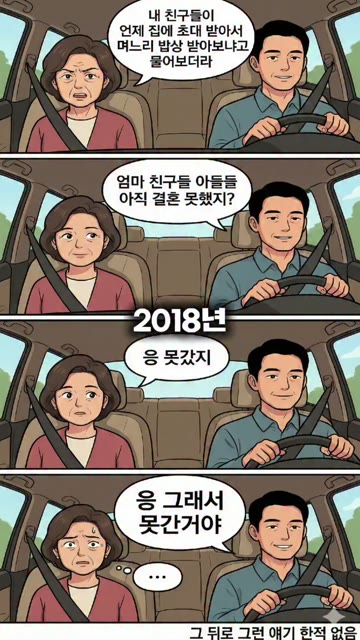
▶육아·가족의 실제 장면관계 동일시 · 비전이 · 2026-01-27 · 7,514,000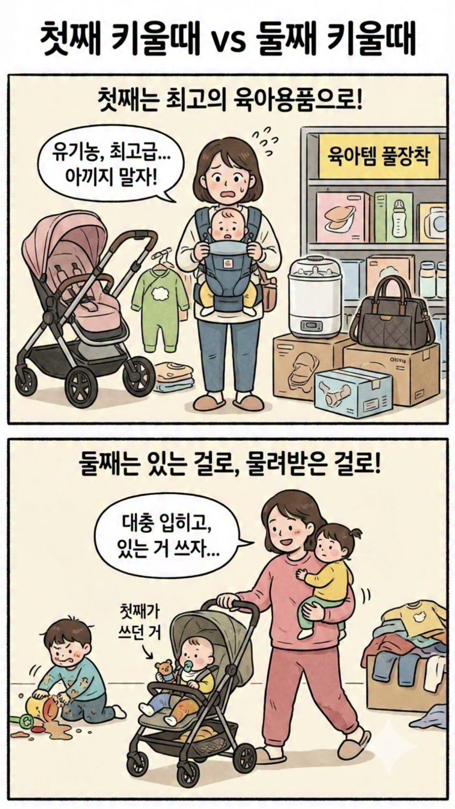
▶관계와 가족 공감관계 동일시 · 비전이 · 2026-02-27 · 2,645,000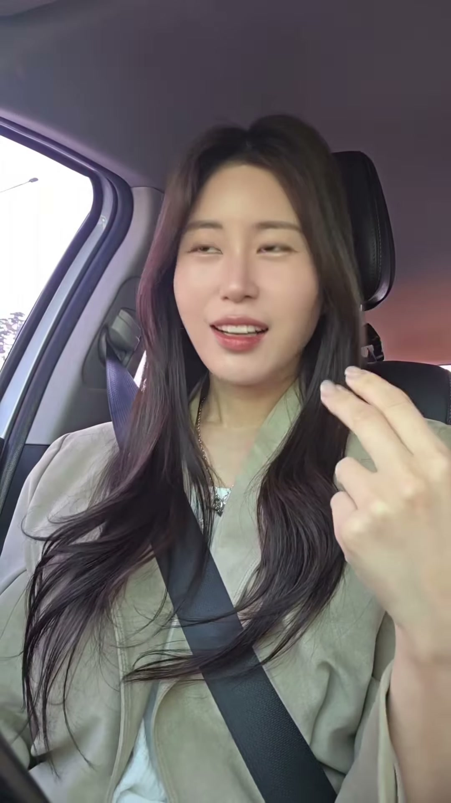
▶“둘째들 모여봐”캐릭터 선명화 · 비전이 · 2026-03-17 · 2,518,000▶관계 판별자 조니캐릭터 선명화 · 비전이 · 2026-02-08 · 1,463,0004편의 공통 판독 — 큰 주목 · 관계 동일시 · 조니 캐릭터 선명화 / 대체로 J3 · X0 · C0 · P0 / 비전이
상위 조회 콘텐츠 대부분은 육아와 관계에서 나왔습니다. 둘째의 특징, 아이의 식습관, 기저귀, 남편, 시어머니, 결혼과 관계에 관한 콘텐츠가 수십만에서 수백만 회 조회됐습니다. 청중을 직접 부르고, 당연하다고 믿은 관계 규칙을 뒤집으며, 조니의 실제 경험을 근거로 단호한 결론을 내리는 구조가 강하게 작동했습니다.
이 콘텐츠는 조니라는 사람에 대한 친밀도와 캐릭터를 만듭니다. 그러나 브랜드로 이어지려면 가족이 아니라 가족을 돌보며 내린 판단이 본체가 되어야 합니다. 아이 피부가 갑자기 붉어졌을 때 무엇부터 멈췄는지, 엄마와 아이가 같은 제품을 써도 되는 조건을 어떻게 구분했는지, 병원에 갈 때와 집에서 관찰할 때를 어떻게 나눴는지, 바쁜 아침에도 남긴 최소 단계가 무엇인지가 갈등과 해결에 들어가야 합니다.
하지만 이런 가족·일상 콘텐츠마다 제품이 등장할 필요는 없습니다. 공감이 생길 때마다 제품으로 이어지면, 앞의 이야기 전부가 판매를 위한 장치처럼 느껴질 수 있기 때문입니다. 다만 가족을 돌보며 내린 판단이 AD솔루션의 제품 기준과 실제로 만나는 콘텐츠는 분명히 필요합니다. 매번 연결하지 않되, 연결될 이유가 생긴 순간에는 분명하게 연결합니다.
3-5. 논쟁이 화제가 되는 것과 브랜드에 도움이 되는 것은 다르다
브랜드와 직접 연결되지 않는 개인 콘텐츠도 같은 얼굴과 같은 계정에서 발행됩니다. 그래서 하나의 논쟁이 계정을 키우는 동시에, 고객이 제품 앞에서 망설이게 만들 수도 있기에 두 결과는 같은 콘텐츠에서 함께 나올 수 있으므로 따로 카운트해야 합니다.
가르는 기준은 논쟁의 세기와 주제라기 보다 분노의 방향과 그 결과입니다. 따라서 발행 전 5가지를 체크합니다.
- 고객이 겪는 부당함을 대신 공격하고 있는가.
- 잘못된 관행이나 선택의 순서를 공격하고 있는가.
- 특정 개인과의 갈등을 해명하거나 응징하고 있는가.
- 이 논쟁을 본 사람에게 제품에 대한 신뢰가 늘어나는가.
- 반대로 제품 앞에서 새로운 망설임이 생기는가.
앞의 두 방향은 계정과 브랜드에 함께 쌓입니다. 반대로 개인 갈등의 해명과 응징은 시청자가 사실관계를 모두 알 수 없기 때문에, 공격한 사람과 대응하는 사람 모두에게 불편함을 남길 수 있습니다. 피부나 제품과 가까운 콘텐츠에서 같은 방식의 단정이 나오면 그 부담은 제품 판단까지 옮겨갑니다.
이 기준은 조니의 입을 막기 위한 것이 아닙니다. 어떤 논쟁은 계정을 키우고, 어떤 논쟁은 고객이 제품 앞에서 망설이게 만들기에 그 둘을 가르기 위한 것입니다. 발행 전 점검의 나머지 질문은 13-6에서 하나로 정리했습니다.
AD솔루션은 고객에게 무엇을 되돌려주는 브랜드인가.
고객에게 필요한 것은 더 많은 선택지가 아니라,
다시 선택할 수 있는 기준입니다.
4-1. 고객은 좋은 제품보다 다시 실패하지 않을 기준을 찾는다
AD솔루션 고객은 새 화장품을 설레는 마음으로만 구매하지 않습니다. 순하다는 제품을 이미 여러 번 믿었고, 좋다는 제품과 관리에 비용을 지불했으며, 다시 따갑거나 붉어진 경험이 있습니다. 화장품으로 해결할 수 있는 문제인지 치료가 먼저인 상태인지 알지 못한 채 시간과 비용을 반복해서 사용하기도 했습니다.
실제 고객 언어에는 이러한 경험이 분명하게 나타납니다. “좋다는 것은 다 써봤다”, “또 속는 셈 치고 샀다”, “아무거나 사용할 수 없다”, “제품 유목민처럼 돌고 돌았다”는 표현이 반복됩니다.
처음에는 이 고객에게 더 좋은 제품이 필요하다고 판단하기 쉽습니다. 성분을 더 자세히 설명하고, 보습력을 강화하고, 효과가 있었다는 후기를 더 많이 제시하면 된다고 생각할 수 있습니다.
그러나 이 고객이 구매 앞에서 멈추는 이유는 좋은 제품을 아직 찾지 못했기 때문만이 아닙니다. 다시 잘못 선택할 가능성을 두려워하기 때문입니다. 반복된 실패를 통해 잃어버린 것은 화장품 한 병이 아니라, 지금 무엇을 발라도 되는지 스스로 판단할 수 있다는 확신입니다.
선택지가 많아지는 일도 이 고객에게는 자유보다 부담에 가깝습니다. 어떤 제품을 더할지보다 지금 무엇을 멈춰야 하는지, 화장품을 시도해도 되는 상태인지, 다시 시작한다면 어떤 순서로 확인해야 하는지가 먼저 필요합니다.
따라서 AD솔루션이 경쟁해야 할 기준은 성분의 개수나 즉각적인 변화가 아닙니다.
실패를 많이 겪은 피부가 다시 선택할 수 있게 하는가.
AD솔루션은 단순히 예민한 피부에 사용하는 제품을 판매하는 브랜드가 아닙니다. 여러 선택에 실패한 고객에게 다음 선택의 순서를 되돌려주는 브랜드입니다. 제품은 그 판단 뒤에 놓이는 하나의 선택지이며, AD솔루션의 대표인 조니는 정답을 대신 강요하는 사람이 아니라 고객이 자기 상태를 구분하도록 돕는 판별자입니다.
4-2. 브랜드 테제
바를 수 없는 날에도, 선택지는 남아야 하니까.
이 문장은 감성적인 슬로건으로 끝나지 않습니다. 제품, 대표, 콘텐츠가 같은 방향으로 움직이게 하는 운영 명제입니다.
제품에서는 기능을 더 많이 넣는 것보다 예민한 시기에 사용할 수 있는 선택지를 설계한다는 뜻입니다. 모든 피부 문제를 화장품으로 해결한다고 약속하지 않고, 제품을 시도할 때와 치료가 먼저인 때를 구분합니다. 사용할 수 있는 사람뿐 아니라 사용하지 않는 편이 나은 사람도 함께 밝힙니다.
대표에게서는 무엇이든 파는 사람이 되지 않는다는 뜻입니다. AD솔루션의 대표인 조니는 화장품에라도 기대고 싶은 마음이 얼마나 절박한지를 알죠. 화장품보다 치료가 먼저인 상태에서는 제품을 권하지 않고 병원 진료를 먼저 이야기할 수 있습니다. 이 행동은 판매를 포기하는 도덕적 제스처만이 아니라 고객의 절박함을 이해하는 공감, 화장품과 치료의 범위를 구분하는 판단, 자신의 매출보다 고객의 다음 선택을 먼저 두는 선의가 동시에 드러나는 장면입니다.
콘텐츠에서는 좋아질 것이라는 희망보다 지금의 판단 순서를 준다는 뜻입니다. 무엇부터 멈춰야 하는지, 어떤 상태를 확인해야 하는지, 언제 다시 시도할지, 한 부위에서 무엇을 관찰할지를 남깁니다. 제품명을 지워도 고객이 사용할 수 있는 판단 기준 하나가 남아야 합니다.
따라서 AD솔루션 콘텐츠가 반복해서 증명할 문장은 다음과 같습니다.
AD솔루션은 많이 바르게 하는 브랜드가 아니라, 지금 무엇을 발라도 되는지부터 가려주는 브랜드입니다.
4-3. 고객에게 필요한 것은 선택지가 아니라 선택 기준이다
선택지가 많으면 고객이 더 자유로워진다는 전제는 피부가 건강할 때는 어느 정도 맞습니다. 그러나 반복해서 실패한 피부에서는 선택지가 늘수록 판단 비용도 커집니다. 순하다는 제품마다 기준이 다르고, 진정이라는 말 안에도 미백·주름 개선 같은 기능성 목적이 함께 들어가며, 사용 후의 화한 느낌이 실제로 자기 피부에 맞는 신호인지 알기 어렵습니다.
이 고객에게 필요한 것은 “이 제품이 최고다”라는 결론이 아닙니다. 지금 자기 상태가 무엇인지, 화장품을 시도할 수 있는지, 어떤 기능을 잠시 쉬어야 하는지, 무엇이 생기면 멈춰야 하는지를 가르는 기준입니다.
그래서 AD솔루션은 제품의 효능을 설명하기 전에 선택의 조건을 설명해야 합니다. 제품을 살 사람을 넓게 부르는 대신 해당하지 않는 사람을 먼저 가르고, 성분의 장점을 늘어놓는 대신 그 성분과 제형이 어떤 상태에서 필요한지 말해야 합니다. 제품을 사용한 뒤에는 좋아졌다는 결론만 보여주는 것이 아니라 무엇을 관찰했고, 어떤 변화가 없으면 중단하거나 다른 선택으로 옮길지를 알려줘야 합니다.
이 기준은 판매를 어렵게 만드는 것이 아닙니다. 이미 여러 제품에 실패해 판매자의 말을 경계하는 고객에게는 자신의 이익에 반하는 정보까지 공개하는 사람이 더 믿을 만한 판단자로 보입니다. 누구에게나 맞는다고 말하는 브랜드보다, 맞지 않는 경우를 먼저 밝히는 브랜드가 제품의 범위를 실제로 이해하고 있다는 신호를 줍니다.
4-4. 아토피는 브랜드의 울타리가 아니라 가장 어려운 증명이다
AD솔루션이 아토피에서 출발했다는 사실을 지우면 브랜드는 수많은 민감성·더마 화장품 사이에서 평범해집니다. 조니가 살아온 시간, 환자단체 활동, 치료 접근성을 바꾸기 위해 움직인 이력, 아무것도 쉽게 바를 수 없던 피부에서 제품을 개발한 이유가 모두 약해집니다.
반대로 모든 콘텐츠를 중증 아토피에만 가두면 대표님이 직접 확인한 시장의 한계를 반복하게 됩니다. 페인포인트는 높고 구매 전환은 강하지만 국내 모수는 작습니다. ‘아토피’라는 질병명이 자기 이야기라고 느껴지지 않는 사람은 콘텐츠와 제품을 살펴보기 전에 지나갑니다.
따라서 확장은 아토피를 버리고 속건조나 민감성처럼 더 큰 단어로 갈아타는 방식이 되는 것이 아니라, 아무것도 쉽게 바를 수 없던 사람에게서 통과한 판단 기준을 일시적으로 예민해진 더 넓은 피부 상태에 적용하는 방식이어야 합니다.
중증 아토피는 가장 높은 난도의 출발점입니다. 그다음에는 여러 제품과 관리에 반복해서 실패한 피부가 있습니다. 더 넓게는 계절, 컨디션, 시술, 과도한 기능성 사용 뒤에 일시적으로 최소 선택이 필요한 피부가 있습니다. 브랜드가 넓어지는 방향은 기준을 낮추는 것이 아니라 같은 기준이 필요한 상태의 범위를 넓히는 것입니다.
이 접근은 아토피 고객을 버리지 않으면서도 더마로 확장할 수 있는 논리를 만듭니다. “중증 아토피에도 좋으니 모두에게 좋다”는 위험한 일반화가 아닙니다. 가장 선택이 어려운 피부를 오래 다뤄온 브랜드이기 때문에, 피부가 예민해진 순간에 무엇을 덜어내고 무엇부터 확인해야 하는지 더 엄격한 기준으로 말할 수 있다는 의미입니다.
4-5. 5가지 피부 상태가 콘텐츠의 입구가 된다
고객은 질병명보다 오늘 겪는 상태로 들어오며, 각 입구에는 서로 다른 다음 판단이 필요합니다.
콘텐츠는 고객을 질병명과 인구통계로만 부르지 않습니다. 지금 겪고 있는 상태로 부릅니다. 같은 사람도 계절과 컨디션에 따라 다른 상태를 오갈 수 있고, 같은 제품도 그 상태에 따라 선택이 달라질 수 있기 때문입니다.
무엇을 발라도 따가운 상태
이 고객의 질문은 “또 따가우면 어떡하지?”입니다. 새로운 제품의 장점보다 실패를 피할 순서가 먼저 필요합니다. 콘텐츠는 무엇을 중단할지, 한 부위에서 어떻게 확인할지, 사용 직후 어떤 감각을 관찰할지, 언제 다시 시도하지 말아야 할지를 알려줘야 합니다. 제품 노출은 낮게 두고 판단 과정이 본체가 되어야 합니다.
갑자기 붉고 뜨거운 상태
이 고객의 질문은 “지금 당장 뭘 해야 하지?”입니다. 무엇을 더 바르기보다 일시적인 열감과 진료가 필요한 상태를 구분하고, 기능성 제품을 더 얹지 않아야 할 때를 설명해야 합니다. 화장품이 개입할 수 있는 범위와 병원 판단선을 함께 제시해야 합니다.
보습해도 계속 당기고 긁게 되는 상태
이 고객의 질문은 “보습을 했는데 왜 계속 건조하지?”입니다. 제품 하나의 보습력만 말해서는 충분하지 않습니다. 사용량, 제형, 씻는 방법, 바르는 순서, 환경을 함께 보고, 보습만으로 해결하려 해서는 안 되는 상태도 구분해야 합니다.
기능성 제품을 쉬어야 하는 상태
이 고객의 질문은 “아무것도 안 바를 수는 없는데?”입니다. 피부가 예민한 기간에 무엇을 빼고 무엇만 남길지, 기능성 제품을 다시 시작할 때 어떤 순서로 확인할지를 알려줘야 합니다. AD솔루션 제품의 위치가 가장 자연스럽게 설명될 수 있는 상태이지만, 그렇기 때문에 오히려 비적합 조건과 중단 신호를 먼저 밝혀야 합니다.
아이와 함께 조심해서 사용하는 상태
이 고객의 질문은 “아이에게도 괜찮을까?”입니다. ‘온 가족’이라는 넓은 말보다 연령, 현재 피부 상태, 패치 테스트, 병원 상담이 먼저인 경우를 구체적으로 설명해야 합니다. 엄마와 아이가 같은 제품을 쓴다는 장면보다 서로 다른 피부를 어떻게 구분했는지가 콘텐츠의 핵심이 됩니다.
이 다섯 상태는 타깃을 넓히기 위한 마케팅 문구가 아닙니다. 브랜드가 제품을 권하기 전에 고객의 현재를 읽는 방식입니다. 콘텐츠는 이 상태 중 하나를 입구로 삼고, 그 상태에서 고객이 다음에 해야 할 행동 하나를 남깁니다.
4-6. 작은 시장이 아니라 실패 경험이 조밀한 시장이다
대표님은 국내 아토피 시장의 모수가 제한적이며, 광고를 통해 도달할 수 있는 사람에게 이미 상당 부분 도달했다고 설명했습니다. 따라서 더마와 민감성 영역으로 확장할 필요를 느끼는 판단은 타당합니다.
다만 시장은 잠재 고객의 수만으로 결정되지 않습니다. 같은 문제를 얼마나 자주 겪는지, 실패할 때 치르는 경제적·심리적 비용이 얼마나 큰지, 그 문제를 정확히 이해하는 사람을 얼마나 간절하게 찾는지도 시장의 밀도를 만듭니다.
중증 피부 고객은 한 번의 구매로 문제가 끝나지 않습니다. 여러 제품을 구매하고 병원과 관리를 오가며, 계절과 컨디션이 달라질 때마다 다시 선택합니다. 실패한 제품의 가격뿐 아니라 피부가 회복되는 동안 수면과 일상에서 발생하는 비용도 큽니다. 고객의 수는 작아 보여도 문제와 구매 이유는 조밀합니다.
따라서 AD솔루션은 대형 화장품 브랜드와 인지도나 가격으로 먼저 경쟁할 필요가 없습니다. 고객의 상태를 더 가까이 읽고, 실패를 더 세밀하게 구분하며, 구매하지 않아야 할 때까지 설명하는 밀착의 축에서 경쟁해야 합니다.
더마로의 확장 역시 아토피라는 단어를 지워 모수를 넓히는 방식이어서는 안 됩니다. 아무것도 쉽게 사용할 수 없던 피부에서 확인한 높은 판단 기준을 반복 실패와 일시적 예민함을 겪는 더 넓은 상태로 적용해야 합니다.
확장되는 것은 브랜드의 약속이 아니라, 같은 약속이 필요한 고객의 범위입니다.
브랜드 공개 이후, 지금은 어느 단계인가.
브랜드 공개 이후에는
의미를 다시 학습시키는 3막이 필요합니다.
5-1. 1막과 2막은 이미 실행됐고, 실패가 아니었다
대표님은 처음부터 제품을 파는 사람이라는 정보를 전면에 두지 않았습니다. 브랜드를 숨긴 채 콘텐츠 자체로 볼 이유를 만들어 광고비만으로 확보하기 어려운 개인 도달을 얻은 것이 1막이고, 이 전략은 상위 콘텐츠 수백만 회 조회로 실제 작동했습니다. 브랜드를 공개하고 제품을 연결한 것이 2막입니다. 인스타그램만으로 신제품 판매가 매출을 만들었고, 광고를 본 사람이 “이거 대표님이세요?”라고 묻는 DM은 조니의 얼굴과 제품이 만날 때 추가 신뢰가 생긴다는 증거였습니다. 다만 기대만큼의 매출이 나오지 않았고, 노력에 비해 전환이 작다는 체감이 남았습니다.
5-2. 공개만으로 기억의 분류는 바뀌지 않는다
사람은 가장 강하게 작동한 갈등을 중심으로 상대를 분류합니다. 육아 갈등 때문에 멈춘 사람에게 조니는 단호한 엄마고, 사업의 허상 때문에 멈춘 사람에게는 현실적인 대표입니다. 프로필에 브랜드 대표라고 적는다고 이 분류가 자동으로 바뀌지 않습니다. '뷰티 기업 CEO' 같은 지위 라벨도 같은 이유로 분류를 바꾸지 못합니다. 무엇의 대표인지, 시청자의 어떤 문제를 다루는지가 빠져 있기 때문입니다(→ 9-2). 그래서 기존 팔로워에게는 “재밌는 사람이 갑자기 마스크팩을 판다”는 전환이, 광고에서 36년 당사자 서사를 보고 들어온 피부 고객에게는 “광고에서 본 그 이야기가 피드에는 없다”는 단절이 생깁니다. 양쪽 모두 조니를 보지만 서로 다른 조니를 봅니다.
"그러다 보니 팔로워나 조회수를 끌어들여도 이걸 쓸 데가 없는 거예요. 그래서 계속 이거 어떻게 해야 되지? 라는 생각이 들더라구요."
신뢰할 재료가 없는 것이 아닙니다. 사람이 말해야 설득되는 서사는 오디언스가 작은 브랜드 계정에 있고, 오디언스가 큰 개인 계정은 대중 페르소나가 차지하고 있습니다. 브랜드 계정의 서사 48편은 재업로드할 파일이 아니라 개인 계정에서 변주해 다시 말할 촬영된 대본 재고입니다.
5-3. 3막 — 기억을 다시 학습시키는 단계
브랜드 공개 이후의 과제는 노출 확대가 아니라 조니의 의미를 AD솔루션으로 옮기는 3막입니다.
지금 필요한 3막은 사람들이 이미 기억하는 조니를 AD솔루션의 대표인 조니로 다시 학습시키는 단계입니다. 개인 콘텐츠를 제품 콘텐츠로 교체하는 것이 아니라, 미디어 엔진으로 도달을 유지하면서 전이 엔진으로 판단을 옮기고 선택·정착 엔진으로 구매 전후의 실패를 줄입니다.
3막은 한 번에 일어나지 않습니다. 고객의 인식이 3단계로 바뀌고, 각 단계는 다음 단계로 넘어가는 조건이 채워졌을 때만 이동합니다.
| 단계 | 고객 인식의 변화 | 콘텐츠의 역할 | 다음 단계로 넘어가는 기준 |
|---|---|---|---|
| 단계 ① | 조니에게 이런 경험과 판단 기준이 있었음을 이해 | 원점과 자격을 다시 보여줌 | 조니와 피부 문제의 연결이 낯설지 않음 |
| 단계 ② | 그 판단이 제품 개발 기준에 반영됐음을 이해 | 판단과 제품을 같은 인과 안에 배치 | 제품 언급이 갑작스러운 광고로 느껴지지 않음 |
| 단계 ③ | AD솔루션 자체가 그 기준을 가진 브랜드라고 인식 | 브랜드·제품·사용 판단을 독립적으로 축적 | 대표가 없는 콘텐츠에서도 같은 기준이 읽힘 |
콘텐츠 비율이나 발행 일정보다 이 전환 기준이 중요합니다.
단계 ①의 기준이 채워지기 전에 단계 ②의 콘텐츠를 늘리면, 3-4에서 본 것처럼 앞의 이야기까지 판매 장치로 소급되는 위험이 커집니다.
1막은 사람을 모았고, 2막은 브랜드를 공개했습니다. 3막은 조니에게 형성된 신뢰가 AD솔루션에 남도록 만드는 단계입니다.
한 계정을 어떻게 3개의 엔진으로 운영하는가.
한 계정을 하나의 퍼널이 아니라,
3개의 콘텐츠 엔진으로 운영합니다.
6-1. 유입·신뢰·전환만으로는 현재 계정을 운영하기 어렵다
유입·신뢰·전환은 고객 여정을 이해하는 데 유용하지만, 조니 계정에서는 서로 다른 성과를 지나치게 한 덩어리로 묶습니다. 고부 갈등으로 수백만 조회를 만든 콘텐츠와 피부 상태를 설명해 2만 조회를 만든 콘텐츠를 각각 유입과 신뢰로 부르면 조회수의 차이는 보이지만 무엇이 조니에게 남고 무엇이 브랜드로 옮겨갔는지는 보이지 않습니다.
또한 신뢰를 하나의 콘텐츠 카테고리로 두면 전문적인 정보를 말하거나 창업 서사를 이야기하는 콘텐츠만 신뢰로 분류하기 쉽습니다. 실제 신뢰는 모든 포맷을 관통하는 어법입니다. 단점을 먼저 공개하고, 맞지 않는 고객을 자르고, 강한 주장 뒤에 경험과 이유를 붙이며, 자기 이익보다 고객의 다음 선택을 먼저 두는 방식이 미디어·전이·선택 콘텐츠 모두에서 신뢰를 만듭니다.
그래서 이 계정은 하나의 퍼널보다 3개의 엔진으로 운영하는 편이 정확합니다.
6-2. 미디어 엔진은 사람을 데려오고 조니를 기억하게 한다
미디어 엔진의 임무는 비팔로워를 멈추고 조니를 기억하게 하는 것입니다. 육아, 관계, 사업 현실, 처세, 일상의 펀치라인이 여기에 해당합니다.
이 엔진은 유지해야 합니다. 피부 단독 소재가 오가닉에서 크게 퍼지지 않는다는 대표님의 경험을 무시하고 모든 콘텐츠를 피부로 바꾸면 계정의 도달력과 대표님의 창작 재미가 함께 약해집니다.
대신 미디어 콘텐츠는 자기 역할을 정직하게 갖습니다. 제품을 억지로 태우지 않고 순수 바이럴의 완성도를 지킵니다. 이 콘텐츠의 조회수를 AD솔루션 전환의 선행 지표로 과장하지 않습니다. 비팔로워 도달, 팔로우, 프로필 이동과 함께 계정의 미디어 자산으로 평가합니다.
미디어 엔진이 브랜드와 완전히 단절돼도 된다는 뜻은 아닙니다. 프로필과 고정 콘텐츠가 조니의 다른 층을 발견하게 하는 최소 배관을 제공해야 합니다. 그러나 각 미디어 게시물의 마지막 문장을 제품 광고로 바꾸지는 않습니다.
6-3. 전이 엔진은 조니의 판단을 브랜드 선택 이유로 옮긴다
전이 엔진은 이번 가이드에서 새로 만들어야 할 핵심 영역입니다. 조니에게 생긴 관심이 당사자·환자 대변자·제품 판별자라는 브랜드 페르소나로 이동하게 합니다.
전이 콘텐츠는 바이럴 말투에 피부 단어를 섞은 콘텐츠가 아닙니다. 조니가 다른 영역에서 보여준 판단 방식이 피부에서도 실제로 작동하는 장면입니다. 사업 숫자의 허상을 가르던 사람이 성분의 개수와 실제 사용 가능성을 가르고, 아이를 단호하게 보호하던 사람이 화장품과 진료의 경계를 가르며, 관계에서 잘못된 행동을 끊어내던 사람이 위험한 민간요법과 과도한 기능성 사용을 끊어내는 방식입니다.
전이 엔진의 성공은 조회수 하나로 판단하지 않습니다. 기존 혼합형의 도달 수준을 생존하면서, 댓글·DM·프로필 행동에서 피부 문제나 조니의 카테고리 자격이 언급되는지 봅니다. 반응이 원래 육아·관계 소재에만 머문다면 조회가 높아도 전이에는 실패한 것입니다.
6-4. 선택·정착 엔진은 구매 전후의 실패를 줄인다
선택 엔진은 프로필에 들어온 사람이 자기 상태를 구분하고 제품을 사거나 사지 않을 결정을 돕습니다. 누구에게 맞는지뿐 아니라 누구에게 맞지 않는지, 치료가 먼저인 때는 언제인지, 어떤 순서와 양으로 쓰며 무엇이 생기면 중단해야 하는지를 남깁니다.
정착 엔진은 구매 뒤의 사용 실패를 줄입니다. 예민한 피부 제품은 한 번의 구매로 끝나지 않습니다. 사용량, 순서, 다른 제품과의 조합, 컨디션에 따른 조정에서 경험이 달라질 수 있습니다. 반복 질문에 답하고 고객이 자기 사용을 조절할 수 있게 해야 재구매와 추천이 생깁니다.
이 엔진은 조회수보다 저장, 제품 질문, 웹 이동, 구매 후 문의의 변화, 같은 질문의 반복 감소로 평가합니다. 릴스보다 캐러셀과 고정 게시물이 더 적합할 수 있습니다.
6-5. 세 엔진을 한 콘텐츠에 모두 넣지 않는다
3개 엔진은 동시에 돌아가지만 한 게시물에는 하나의 주 임무를 부여합니다.
바이럴 훅, 조니의 창업 서사, 피부 정보, 제품 설명, 할인, CTA를 한 릴스에 모두 넣으면 어느 역할도 충분히 수행하지 못합니다. 처음에는 관계나 육아로 멈췄지만 중간부터 긴 피부 강의가 시작되면 이탈하고, 제품 설명까지 들은 사람에게 마지막 할인은 앞의 공감을 판매를 위한 장치로 소급해석하게 할 수 있습니다.
한 게시물은 주 임무를 하나만 갖습니다. 다른 엔진의 요소가 보조적으로 들어갈 수는 있지만, 무엇을 성공으로 볼지는 하나여야 합니다. 전이는 미디어 콘텐츠마다 붙는 꼬리가 아니라 독립된 포맷과 반복 편성을 갖습니다.
조니의 어법은 무엇으로 이루어져 있는가.
조니의 어법은 센 말이 아니라,
판단의 순서입니다.
7-1. 조니의 어법은 센 말이 아니라 판단의 순서다
조니의 강한 어법은 말끝보다 대상을 자르고 판단을 공개하는 순서에서 나옵니다.
콘텐츠 보이스와 문장 구조는 실제 발행된 244편에서 반복된 어법을 기준으로 정리합니다. 콘텐츠 전사를 보면 조니의 강점은 비속어나 단정의 세기 하나가 아닙니다. 누구에게 말하는지 첫 문장에서 자르고, 시청자가 당연하게 믿은 전제를 반문하며, 자신이 왜 말할 수 있는지 경험을 붙이고, 이유를 몇 가지로 분류한 뒤 행동을 짧게 끝내는 순서가 반복됩니다.
조회 상위 25% 콘텐츠는 하위 25%보다 청중 직접 호명, 주의 집중 명령, 질문과 반문, 상대 대사 재현이 뚜렷하게 높았습니다. 직접 전이 콘텐츠에서는 체험 근거, 이유와 인과, 분류와 열거가 높은 비율로 나타났습니다.
따라서 조니의 보이스를 보존한다는 것은 모든 문장에 강한 단어를 넣는 일이 아닙니다. 대상을 자른다 → 통념을 반문한다 → 말할 자격을 붙인다 → 이유를 분류한다 → 행동을 절단형으로 끝낸다는 판단의 순서를 유지하는 일입니다.
7-2. 대상을 먼저 자른다
“피부가 원래 좋은 사람들은 제 영상 지금 보지 마세요”, “둘째들 모여봐”, “힘든 엄마들 잘 봐”처럼 조니는 모두에게 인사하지 않습니다. 지금 들을 사람과 지나갈 사람을 첫 문장에서 나눕니다.이미 본 콘텐츠“피부가 원래 좋은 사람들은 제 영상 지금 보지 마세요” “둘째들 모여봐”“힘든 엄마들 잘 봐”
“둘째들 모여봐”“힘든 엄마들 잘 봐”
이 장치는 단순히 자극적인 훅을 만드는 것이 아닙니다. 시청자가 자신의 상황을 즉시 판별하게 하고, 해당하지 않는 사람을 보내면서 남은 사람의 집중을 높입니다. AD솔루션 콘텐츠에서는 피부 타입보다 지금 겪는 상태로 불러야 합니다. “민감 피부 여러분”보다 “세수하고 나면 아무것도 못 바를 만큼 따가운 사람”이 더 정확합니다.
"저희 제품은 보습력이 높아 유분기가 있는 편이라, 여드름 있으신 분들께는 쓰지 말라고 해요. 기전이 다르다고 생각하거든요."
제품을 살 사람보다 듣지 않아도 될 사람을 먼저 가를 수도 있습니다. 기능성 개선이 목적이거나 여드름성 피부라면 이 제품이 맞지 않는다는 제한이 훅이 됩니다. 제한은 주목을 위한 과장이 아니라 뒤에 실제 제품 특성과 대안이 따라오는 약속이어야 합니다.
7-3. 통념을 반문한다
“왜 그런 줄 알아?”, “그게 다 수익인 것 같아?”, “옛날보다 육아가 더 힘들어진 줄 알아?” 같은 질문은 호기심 장식이 아닙니다. 시청자가 당연하게 믿은 전제를 입 밖으로 꺼내고, 조니가 다른 답을 줄 자리를 만듭니다.
피부 콘텐츠에서도 답이 뻔한 질문을 만들거나 공포를 키운 뒤 제품으로 구원해서는 안 됩니다. 반문 뒤에는 조니만의 구분 기준이 와야 합니다. 성분이 많으면 더 좋은지, 시원한 느낌이 진정과 같은지, 순하다는 제품이 모든 예민한 피부에 맞는지처럼 실제 선택을 바꾸는 질문이어야 합니다.
7-4. 내가 왜 말할 수 있는지 필요한 만큼만 붙인다
자격은 프로필 소개가 아니라 방금 내린 판단을 믿을 이유입니다. 모든 피부 콘텐츠에 36년을 처음부터 반복하면 자격이 아니라 상투적인 서론이 됩니다. 그 판단에 필요한 자격만 한 문장으로 사용합니다.
환자 경험, 환자단체 활동, 제품 개발, 실제 사용은 서로 다른 자격입니다. 따가움의 감각을 말할 때는 당사자 경험이 맞고, 치료 우선선을 말할 때는 환자단체 활동과 실제 치료 경험이 맞으며, 제형과 사용 순서를 말할 때는 개발과 사용 경험이 맞습니다. 사업을 잘했다는 사실은 피부를 판단할 자격으로 사용하지 않습니다.
7-5. 이유를 분류한다
조니는 감상을 길게 말하기보다 “왜냐하면”, “첫 번째”, “두 번째”, “그러니까”로 판단을 쪼갭니다. 이 구조는 강한 결론이 근거 없는 단정으로 보이지 않게 합니다.
이유는 3개를 넘기지 않습니다. 성분을 나열하는 대신 그 성분과 제형이 사용 판단을 어떻게 바꾸는지 설명합니다. 원인, 관찰, 개인 경험을 한 문장 안에서 섞지 않고, 무엇이 사실이고 무엇이 조니의 경험적 판단인지 구분합니다.
7-6. 행동을 절단형으로 끝낸다
조니의 결론은 위로나 감상이 아니라 행동입니다. “사지 마세요”, “병원부터 가세요”, “일단 중단하세요”, “한 부위부터 확인하세요”, “이 상태일 때만 쓰세요”처럼 시청자가 지금 할 일을 남깁니다.
행동이 제품 구매일 필요는 없습니다. 비구매와 중단을 말할 수 있는 것이 조니 보이스의 핵심 자산입니다. 저장, 질문, 패치 테스트, 진료처럼 콘텐츠의 임무에 맞는 행동 하나만 남깁니다.
7-7. 6가지 보이스 모드
훈령자 모드는 청중을 부르고 잘못된 행동을 지적한 뒤 기준 2~3개와 명령으로 끝냅니다. 중단 신호, 사용 순서, 비적합 고객에 적합합니다. 근거가 없으면 잔소리나 단정으로 보이는 위험이 있습니다.
현실 폭로자 모드는 사람들이 믿는 통념이나 숫자를 제시하고 숨은 비용과 조건을 드러낸 뒤 현실적인 결론을 줍니다. 사업 콘텐츠에서 검증된 반전을 피부 판단으로 옮길 때 적합합니다. 제품을 뒤에 붙이면 꼬리표 광고가 되므로 사고방식 자체가 피부 문제를 해결해야 합니다.
대사 재연자 모드는 실제 고객 질문을 재연하고 즉시 반박한 뒤 이유와 대안을 줍니다. DM과 CS 질문을 콘텐츠로 포착할 때 적합합니다. 가상의 무지한 고객을 만들어 조롱하면 관계를 손상하므로 실제 질문을 익명화해 사용합니다.
살아본 판별자 모드는 현재 피부 장면에서 시작해 과거 경험을 한 줄 붙이고 상태를 구분한 뒤 행동을 줍니다. 치료 우선선, 따가움, 붉어짐, 건조함에 적합합니다. 매번 투병사를 처음부터 반복하지 않고 현재 판단에 필요한 장면만 꺼냅니다.
거절하는 판매자 모드는 살 사람을 제한하고, 왜 맞지 않는지 설명하고, 다른 선택을 제안한 뒤 해당 고객에게만 제품을 설명합니다. 조니의 선의와 제품 이해를 가장 직접적으로 증명합니다. “사지 마”만 반복하면 역판매를 이용한 광고 문법이 되므로 실제 비적합 이유와 대안이 필수입니다.
사용 중계자 모드는 실제 피부 장면, 지금 느끼는 문제, 사용 과정, 관찰과 확인 순서로 갑니다. 제품이 이야기 해결에 실제로 참여합니다. 한 번의 즉시 변화를 일반 효능처럼 말하지 않고 그 순간 무엇을 관찰했는지 구분합니다.
7-8. 쓰지 않을 목소리
감성적으로 위로하는 선생님, 모든 사람을 포용하는 브랜드 안내자, 성분명을 많이 아는 것으로 권위를 대신하는 전문가, 공격받은 일을 공개적으로 받아치는 대표, 매출과 성공을 증명해 제품을 파는 사업가의 목소리는 사용하지 않습니다.
"저는 감성적으로 말하면 재미가 없어요. 감성적인 폰트도 해봤는데, 스스로 너무 착한 척하는 느낌이라 안 맞더라고요."
이 목소리들이 절대적으로 나쁘기 때문이 아닙니다. 조니가 실제로 잘하는 말하기 방식과 맞지 않거나, AD솔루션의 선택 이유로 이어지지 않거나, 고객의 안전감에 비용을 만들기 때문입니다.
바이럴은 어떤 장치로 브랜드가 되는가.
전이는 제품을 언급하는 일이 아니라,
같은 인과 안에 넣는 일입니다.
8-1. 전이는 언급이 아니라 인과다
피부나 제품을 한 번 언급했다고 브랜드 전이가 생기지 않습니다. 이야기의 본체가 육아·관계·사업으로 완결된 뒤 제품명을 붙이면 제품은 의미를 얻지 못하고 관심만 빌립니다.
혼합형 여부는 세 질문으로 판정합니다. 피부나 제품을 지우면 갈등과 해결이 달라지는가. 콘텐츠에서 보인 조니의 특성이 AD솔루션을 선택할 이유와 같은가. 제품명을 지워도 시청자가 사용할 판단 기준 하나가 남는가. 두 질문 이상을 통과하지 못하면 혼합형이 아니라 순수 미디어 또는 꼬리표 광고입니다.
전이는 소재가 아니라 판단 원리의 적합성에서 발생합니다. 인물에게 붙은 속성과 제품이 해결하는 문제 사이에 인과와 적합성이 있어야 합니다. 조니의 모든 인기 요소를 제품에 붙일 필요가 없는 이유이자, 아래 4가지 장치가 소재 목록이 아니라 연결 방식인 이유입니다.
| 조니에게 형성된 인식 | 그대로 두면 남는 곳 | AD솔루션으로 이전되는 장면 |
|---|---|---|
| 아이를 단호하게 키우는 사람 | 엄마·육아 페르소나 | 아이 피부에 무엇을 더 바르기보다 상태를 보고 멈추거나 진료를 선택한 보호 기준 |
| 관계에서 잘못을 잘라내는 사람 | 센 언니·관계 판별자 | 위험한 민간요법, 과도한 기능성 사용, 누구에게나 맞는다는 판매 언어를 가르는 기준 |
| 사업을 잘 아는 사람 | 사업가 권위와 선망 | 더마 코스메틱을 만들고 유지하기 위해 어떤 문제를 해결하고 무엇을 포기했는지 보여주는 과정 |
| 숫자의 허상을 가르는 사람 | 현실적인 대표 | 성분 개수와 실제 사용 가능성, 제품 한 병의 가격과 반복 실패의 총비용을 구분하는 판단 |
| 강하고 솔직한 사람 | 조니 개인의 캐릭터 | 비적합 고객·제품의 한계·중단 신호를 먼저 밝히는 판매 원칙 |
| 아토피를 오래 겪은 사람 | 개인의 투병 서사 | 여러 환자의 문제를 보고 치료와 화장품의 범위를 구분해온 카테고리 자격 |
8-2. 판단 구조 전이
사업 콘텐츠의 강점은 매출을 말한다는 사실이 아닙니다. 겉으로 보이는 숫자와 실제 남는 것을 구분하는 사고방식입니다.
이 구조는 성분의 개수와 실제 사용 가능성, 즉시 시원한 느낌과 피부 상태에 맞는 진정, 제품 한 병의 가격과 반복 실패로 지불한 총비용을 가르는 데 사용할 수 있습니다.
옮기면 안 되는 것은 사업 매출 이야기를 끝낸 뒤 제품 할인으로 넘어가는 방식, 성공한 대표라는 이유로 제품 신뢰를 요구하는 방식, 피부와 무관한 노동 서사에 브랜드명을 삽입하는 방식입니다. 옮기는 것은 사업 소재가 아니라 숨은 조건을 따지는 판단입니다.
아래 두 편은 그 판단이 실제로 옮겨진 실물입니다 — 소재는 각각 출산 비용과 할인 고지에서 왔지만, 옮겨간 것은 소재가 아니라 셈하는 방식입니다.
실물 8-2-① — 내 몸으로 검증한 비법
몇 년생 애들 낳느라 쓴 돈? 내가 딱 정리해줄게. 산전 마사지 100만원. 조리원비 첫째 350, 둘째 550. 제왕절개 입원 각각 150. 산후 영양제 20만원… 따로 관리해서 넣지도 않았어. 거의 얼마야 그러면?
36년 아토피 앓느라 쓴 돈? 내가 딱 정리해줄게. 신약 주사 한 달에 300만원. 급여 되기 전 약값은 한 달에 200만원. 산정특례 코드 받기 전까지 병원비는 세지도 않았어. 올리브영에 있는, 백화점에 있는, 약국에 있는 진정 세럼은 안 써본 게 없어. 그것도 다 돈이야. 따로 관리해서 넣지도 않았어. 거의 얼마야 그러면?
해설. 이 포맷의 두 번째 칸은 원래 “내가 이걸 말할 자격이 있다”를 반박 불가능한 수치로 증명하는 자리입니다. 같은 포맷의 키 릴스가 “우리 아빠가 160, 엄마가 160”으로 그 칸을 채워 321,000까지 갔습니다. 피부 서사는 그 칸에 그대로 들어갑니다.
옮겨온 것은 소재가 아니라 셈법입니다. 8-2가 말한 “제품 한 병의 가격과 반복 실패로 지불한 총비용을 가르는” 판단이 여기서 실제로 작동합니다 — 신약 주사 300만원과 급여 전 약값 200만원은 제품 한 병의 값이 아니라 반복 실패의 총비용이고, “올리브영에 있는, 백화점에 있는, 약국에 있는 진정 세럼은 안 써본 게 없어”는 그 총비용의 목록입니다. 시청자는 제품명을 듣기 전에 자기 지출을 다시 세는 기준 하나를 받습니다.
마감은 원본대로 질문으로 닫습니다. 마지막을 제품으로 닫으면 8-6이 규정한 꼬리표가 되고(같은 포맷에서 제품으로 닫은 편이 4,242), 앞에서 쌓은 총비용 계산이 판매 장치로 소급해석됩니다.
채택 기준. 13-3의 도달 생존선(직전 90일 전이 엔진 중앙 조회수 — 2026-08-05 수집 스냅샷 기준 중앙 조회수 9,012회)에 더해, 댓글·DM·프로필 행동에서 조니의 당사자 자격이나 피부 지출이 언급되면 성공입니다. 반응이 출산·육아 비용 이야기로만 돌아가면 조회가 커도 실패입니다. 세 번 실행해 두 번 이상 성공하면 채택합니다.이 장치의 다른 실물 예시와 5축 판정 상세 — 부록 A(A-0 · A-1).
8-3. 보호 기준 전이
육아 콘텐츠의 가족 공감을 그대로 가져오는 것이 아닙니다. 아이를 보호하기 위해 내린 선택 기준을 가져옵니다.
아이 피부가 갑자기 붉어졌을 때 무엇부터 멈추는지, 엄마와 아이가 같은 제품을 써도 되는 조건이 무엇인지, 병원에 갈 때와 집에서 관찰할 때를 어떻게 나누는지, 바쁜 아침에 남길 단계와 버릴 단계가 무엇인지가 갈등과 해결의 중심이 됩니다.
이때 아이는 제품을 자연스럽게 보여주기 위한 소품이 아닙니다. 보호자의 판단을 검증하는 실제 맥락입니다. 아이의 상태와 제품 사용에 관한 사실은 발행 전에 반드시 확인합니다.
아래 두 편은 아이를 소품으로 쓰지 않고, 보호자가 실제로 내린 기준을 갈등과 해결의 중심에 둔 실물입니다.
실물 8-3-① — 육아 훈육·실용 방법론
식탁에서 애랑 실랑이하는 엄마들 잘 봐. 내가 식습관 교육 아주 제대로 하는 방법 알려줄게. 일단 완밥 경험을 시켜줘야 되거든. 밥을 진짜 개미 콧딱지만큼만 줘봐. …식습관 교육만 제대로 해도 정말 육아가 편했습니다.
식탁에서 애랑 실랑이하는 엄마들 잘 봐. 내가 식습관 교육 아주 제대로 하는 방법 알려줄게. 나 36년 중증 아토피고 산정특례 코드까지 있어서, 우리 애 입에 뭐가 들어가는지는 남들보다 좀 더 봐. 일단 완밥 경험을 시켜줘야 되거든. 밥을 진짜 개미 콧딱지만큼만 줘봐. 그리고 알레르기 있는 음식은 절대 안 먹여. 이건 편식이랑 다른 얘기야. …식습관 교육만 제대로 해도 정말 육아가 편했습니다.
해설. 바뀐 것은 두 곳입니다. 훅에 자격 한 줄을 얹고, 원칙 목록에 항목 하나를 더했습니다. 본체인 방법론은 손대지 않았고 제품은 0건입니다.
자격 한 줄은 7-4가 정한 방식대로 붙었습니다 — 36년을 자기소개로 반복하지 않고, 방금 내린 판단(아이 입에 들어가는 것을 본다)에 필요한 만큼만 한 문장입니다. 더해진 항목은 보호 기준 그 자체입니다. “알레르기 있는 음식은 절대 안 먹여. 이건 편식이랑 다른 얘기야”는 8-3이 말한 “아이 피부가 갑자기 붉어졌을 때 무엇부터 멈추는지”의 식탁 버전이고, 편식과 알레르기를 가르는 문장이 곧 보호자에게 남는 판단 기준입니다. 대표님이 이미 “알레르기 있는 음식은 절대 안 먹는다”를 1원칙으로 말한 적이 있어 두 콘텐츠가 논리적으로 이어집니다.
발행 전 확인. 8-3의 단서를 그대로 적용합니다 — 아이는 제품을 자연스럽게 보여주기 위한 소품이 아니라 보호자의 판단을 검증하는 실제 맥락이며, 아이의 상태와 제품 사용에 관한 사실은 발행 전에 반드시 확인합니다.
채택 기준. 도달 생존은 13-3의 선(직전 90일 전이 엔진 중앙 조회수 — 2026-08-05 수집 스냅샷 기준 중앙 조회수 9,012회)으로 봅니다. 의미 성공은 댓글·DM이 육아 팁에만 머물지 않고 아이 피부·알레르기·조니의 당사자 자격으로 옮겨가는지로 봅니다.이 장치의 다른 실물 예시와 5축 판정 상세 — 부록 A(A-0 · A-2).
8-4. 당사자 자격 전이
조니의 강한 단정 뒤에 살아본 경험과 비판매 기준을 붙입니다. “이상한 민간요법 하지 말라고요”라는 말이 단순한 비난으로 끝나지 않고, 대표님이 실제로 여러 치료와 민간요법에 큰 비용을 썼고 환자단체에서 같은 문제를 봐왔다는 이유로 이어질 때 강함은 카테고리 자격이 됩니다.
당사자 자격은 고통의 크기를 경쟁하는 데 사용하지 않습니다. 고객의 현재를 더 정확히 판별하기 위해 사용합니다. 서사의 결론은 “나는 이렇게 힘들었다”가 아니라 “그래서 당신은 지금 무엇부터 구분해야 한다”가 됩니다.
아래 두 쌍은 같은 세기의 말이 자격으로 읽히는 경우와 세기로만 남는 경우를 실물로 대조합니다.
실물 8-4-① — 센 말 뒤에는 “왜”가 한 줄 붙는다
아래 쌍은 개작 전후가 아니라 이미 발행된 두 편의 대조입니다.
세 번째 입술이 두껍고 입술이 약간 보라색인데 탁하게 이렇게 된 사람들 있거든 그 잘 모르겠지만 뭐라고 표현할지 모르겠지만 나는 변태관상이라고 불러 변태관상 조심해라
임신이 쉽다고? 누가 그러냐? 루푸스 있어서 임신하고 매일 주사 맞아봤냐? 임신 중에 아나필락시스 와서 응급실 실려가봤냐? 난 목숨 걸고 애들 낳았어. 해보지도 않아놓고.
해설. 둘 다 대표님이 실제로 올린 편이고, 둘 다 셉니다. 차이는 하나입니다 — 임신 릴스의 단정에는 화낼 자격의 출처(루푸스·응급실)가 붙어 있고, 관상 릴스의 단정에는 화자 스스로 “잘 모르겠지만”이라고 말한 자리가 있습니다.
8-4가 요구하는 것이 정확히 앞의 구조입니다. 강한 단정 뒤에 살아본 경험이 붙으면 강함은 카테고리 자격이 되고, 붙지 않으면 강함은 강함으로만 남습니다. 앞의 구조는 반박이 붙지 않고, 다른 사람이 그대로 쓸 수도 없습니다.
881,000은 미디어 엔진의 성과입니다. 13-2의 강한 성공선(직전 90일 미디어 엔진 상위 사분위 — 2026-08-05 수집 스냅샷 기준 상위 사분위 31,000회)을 크게 넘겼고, 이 한 줄 없이도 나온 숫자입니다. 다만 이 편이 남긴 기억은 J(조니 개인)에 머물고, 근거 없는 단정이 반복되면 1-2의 축 E(평판 파급)와 10-1의 확신 축에 비용이 생깁니다 — 상황에 따라 말이 바뀌지 않는다는 확신은 같은 사람의 다른 단정에도 함께 적용되기 때문입니다. 88만을 계정 전체의 신뢰로 남기려면 임신 릴스의 순서, 단정보다 자격을 먼저를 붙이면 됩니다.
채택 기준. 관상 편은 도달과 계정 행동(13-2)으로, 임신 릴스의 순서에 피부 자격을 접속한 버전은 도달 생존과 의미 성공(13-3)으로 함께 채점합니다.이 장치의 다른 실물·경계 사례와 5축 판정 상세 — 부록 A(A-0 · A-3 · A-4).
8-5. 사용 장면 전이
제품이 해결에 실제로 참여하는 장면을 만듭니다. 피부가 뒤집어졌거나 샤워 뒤 붉어졌거나 기능성 제품을 쉬어야 하는 실제 상태에서 시작합니다. 지금 느끼는 문제와 사용할 제품, 사용량과 순서, 사용 뒤 관찰할 것을 같은 사건 안에 둡니다.
제품을 지우면 이야기의 해결도 사라져야 합니다. 반대로 제품 없이도 완성되는 일상 뒤에 사용 장면을 붙였다면 사용형이 아닙니다.
아래 두 편에서 새로 보는 것은 원본 영상이 아니라 개작 전후의 텍스트입니다 — 콘텐츠 자체는 3부에서 이미 판정했습니다.
실물 8-5-① — 근거는 훅이 아니라 마지막에
원본 대비: 같은 촬영분으로 만든 두 편. 6월 27일 편은 제품을 꺼내 보여주며 시작해 4,839에서 멈췄고, 7월 6일에 훅만 바꿔 다시 편집한 편은 “근데 너무 따가워”라는 통증 장면으로 시작해 113,000까지 갔습니다.
저는 샤워가 나오면 항상 피부가 예민해서 빨개지는 데가 많거든요. 이게 하나에 다섯 개씩 들었기 때문에 5, 6, 30 딱 여섯 개 세트를 사시면 한 달 쓰실 수 있거든요. 하루로 따지면 하루에 5천원 꼴이거든요. 5천원이면 요즘 진짜 커피값도 안 돼요. (…성분 설명…) 매끈매끈해요. 진짜 진짜 진짜.
샤워하고 나오면 여기가 매번 이렇게 빨개져요. 저는 세럼만 발라도 붉어지는 피부예요. 얇고 예민한 편이라 더 그렇고요. (…붙이고, 떼고, 얼굴 보여주는 장면…) 매끈매끈해요. 너무 마케팅 같아. 뭐야 이게. 진짜 진짜 진짜. 성분표는 마지막에 보여드릴게요. 세라마이드 MP, 시카 리포좀, 판테놀, 알란토인, 구아이아줄렌 — 피부 장벽 성분만 넣었고 잔기교 안 부렸습니다.
해설. 문장은 하나도 새로 쓰지 않았습니다. 가격과 성분 덩어리를 통째로 맨 뒤로 옮겼을 뿐입니다. 같은 계정에서 훅만 바꿔 재편집한 두 편이 4,839와 113,000이었습니다. 이 순서 하나가 그 차이를 만들었습니다.
8-5가 요구한 순서가 그대로 구현됩니다 — 실제 상태(샤워 뒤 붉어짐)에서 시작해, 그 상태에 쓰는 제품과 사용 장면을 같은 사건 안에 두고, 관찰한 것(“매끈매끈해요”)을 말한 뒤, 성분표는 마지막에 놓습니다. 성분과 수치는 이미 관심 있는 사람에게만 정보이고 아직 관심 없는 사람에게는 광고 신호입니다. 4-5가 콘텐츠 입구로 지정한 다섯 상태 중 “갑자기 붉고 뜨거운 상태”가 이 편의 입구입니다.
“너무 마케팅 같아. 뭐야 이게”는 자기 발화를 스스로 검열하는 문장이고, 10-1의 선의 축이 대사 한 줄로 나타난 자리입니다. 이 문장을 매끄럽게 다듬으면 그 효과가 사라집니다.
채택 기준. 도달 생존은 13-3의 선(직전 90일 전이 엔진 중앙 조회수 — 2026-08-05 수집 스냅샷 기준 중앙 조회수 9,012회)으로 봅니다. 의미 성공은 “저도 세럼만 발라도 붉어져요” 류의 상태 자기보고가 댓글·DM에 오는지로 봅니다. 피부 구간 직전 이탈이 반복되면 조회가 높아도 실패입니다.이 장치의 다른 실물 예시와 5축 판정 상세 — 부록 A(A-0 · A-5).
8-6. 꼬리표 광고가 신뢰를 깎는 이유
갈등과 해결이
달라지는가?
제품이 갈등과 해결을 바꾸지 못한다면 의미 전이가 아니라 이야기 뒤에 붙은 판매 꼬리표입니다.
시청자는 콘텐츠의 앞부분에서 자신이 왜 멈췄는지 압니다. 육아 공감이나 관계 갈등으로 관심을 얻은 뒤 갑자기 제품을 판매하면 앞의 공감까지 판매를 위한 장치였다고 다시 해석할 수 있습니다. 콘텐츠의 감정과 제품의 해결이 인과로 연결되지 않을수록 이 전환은 더 인위적으로 느껴집니다.
따라서 금지되는 연결은 3가지입니다. 원래 이야기를 끝낸 뒤 제품명이나 할인율을 붙이는 방식, 가족과 사업 공감으로 관심을 얻은 뒤 갑자기 제품을 판매하는 방식, 바이럴 훅만 복사하고 본문은 평범한 피부 강의로 바꾸는 방식입니다.
전이 콘텐츠의 목표는 광고 티를 숨기는 것이 아닙니다. 처음부터 끝까지 같은 문제를 해결해 제품과 브랜드가 등장할 이유를 만드는 것입니다.
구매 앞뒤의 판단을 무엇으로 돕는가.
고위험 구매일수록
더 많은 증명이 필요합니다.
9-1. 고위험 구매일수록 더 많은 증명이 필요하다
중증이거나 반복해서 뒤집어진 피부에게 화장품 구매는 가벼운 소비가 아닙니다. 제품 가격만 위험한 것이 아닙니다. 다시 따가워질 가능성, 피부가 더 나빠질 수 있다는 두려움, 치료 비용, 회복에 걸리는 시간, 또 실패했다는 심리적 실망까지 함께 계산합니다.
구매 위험이 클수록 고객은 화려한 약속보다 실패 가능성을 줄일 증거를 찾습니다. 누가 만들었는지, 어떤 상태에서는 쓰지 말아야 하는지, 치료와 화장품의 경계가 어디인지, 실제 사용자는 어떤 과정으로 정착했는지, 문제가 생겼을 때 브랜드가 어떻게 답하는지가 중요해집니다.
따라서 AD솔루션의 선택 콘텐츠는 효능을 반복하는 광고가 아니라 위험을 낮추는 정보 체계여야 합니다. 제품을 사게 만드는 것뿐 아니라 잘못 사지 않게 하고, 산 뒤 잘못 사용하지 않게 하는 것까지 전환의 일부로 봅니다.
9-2. 인스타그램 계정은 이 브랜드의 랜딩페이지다
광고나 릴스를 보고 프로필에 들어온 사람은 브랜드 홈페이지에 들어온 사람과 비슷한 질문을 갖습니다. 또 따가울지, 아토피가 아니어도 되는지, 여드름에는 왜 권하지 않는지, 가격이 왜 높은지, 어떤 제품부터 써야 하는지 확인합니다.
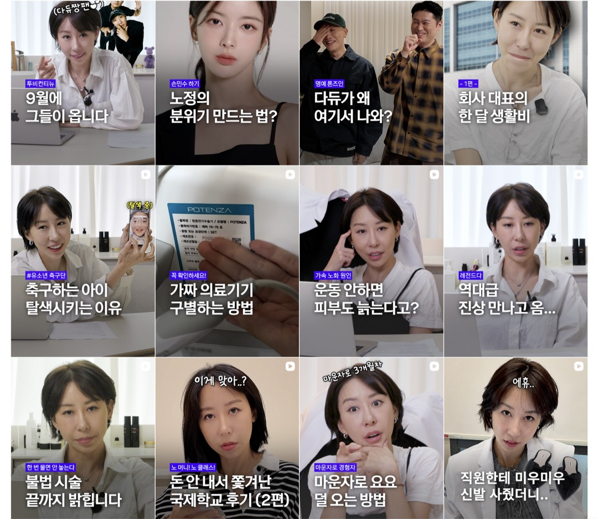
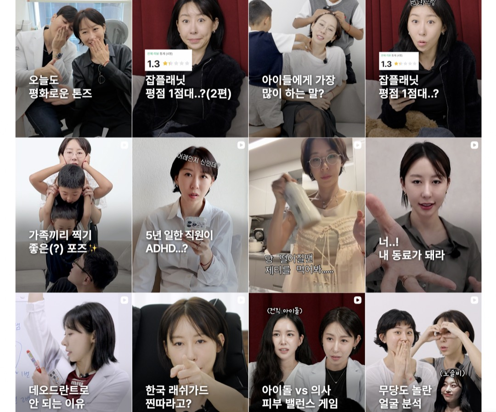
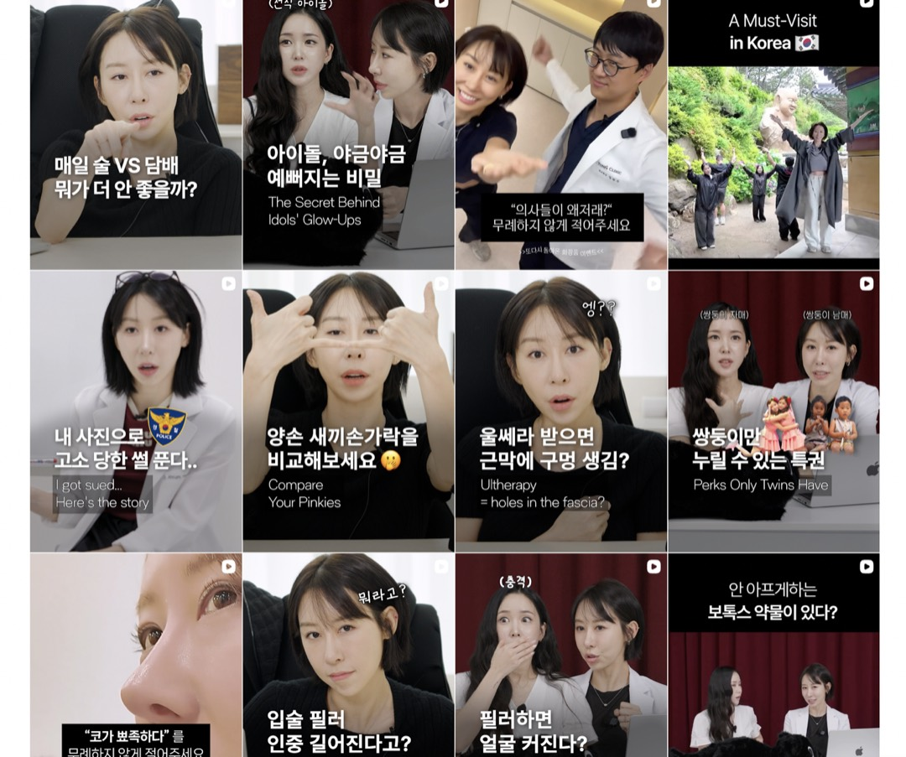
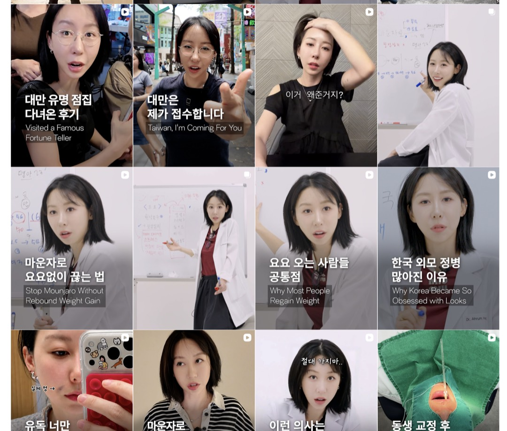
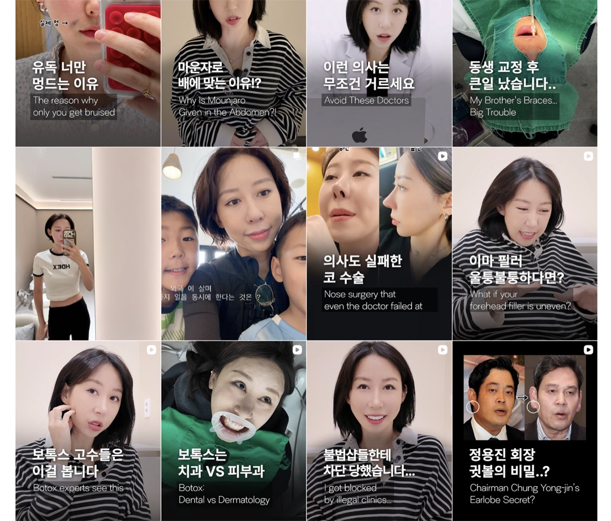
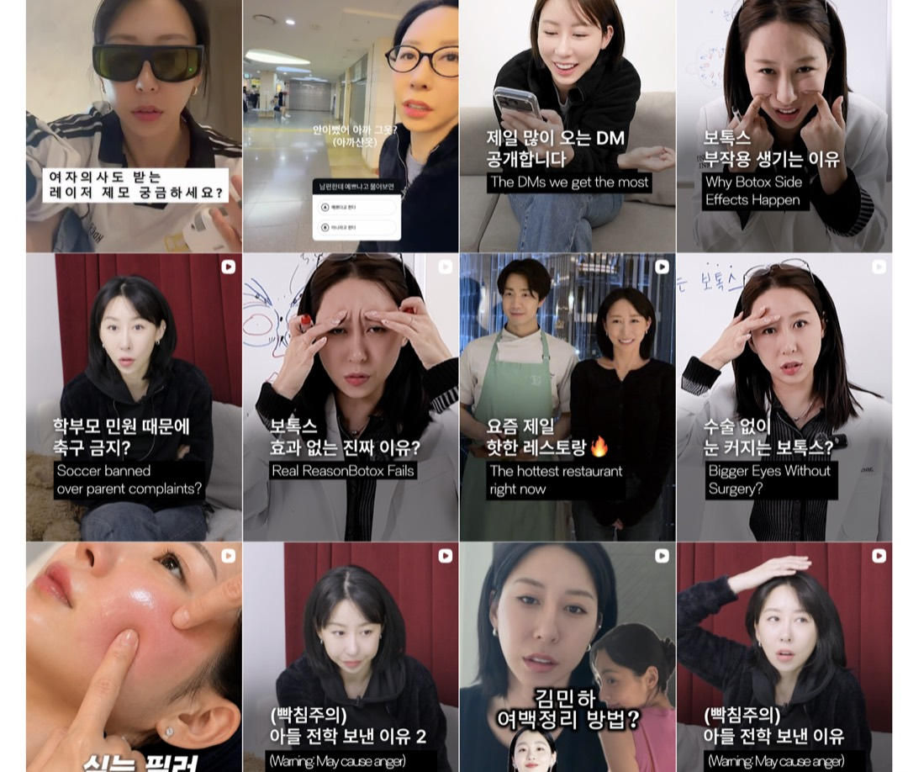
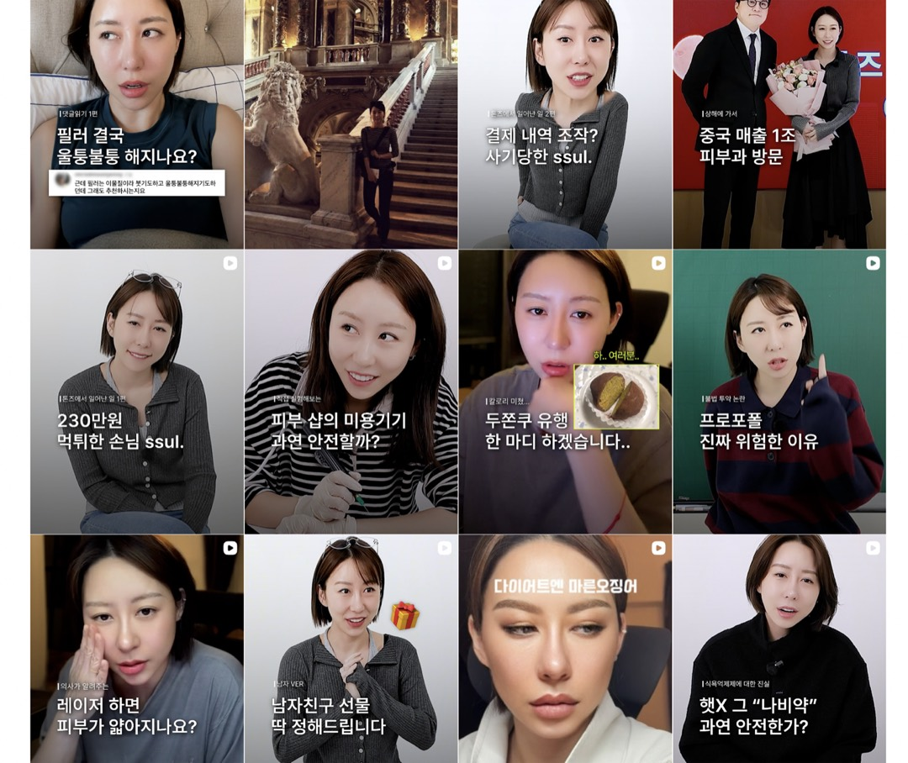
그런데 방문자가 가장 먼저 읽는 것은 고정 게시물도 캐러셀도 아니라 그리드 한 화면입니다. 사람들은 릴스를 한 편씩 보기 전에 첫 화면 12칸을 통째로 보고 이 계정이 무엇 하는 계정인지 판정합니다. 계정의 정체성은 잘 만든 한 편이 아니라, 아무 화면이나 잘라도 절반 가까이가 같은 방향을 가리키는 신호에서 학습됩니다.
위 계정에서 그 신호가 실제로 어떻게 유지되는지를 보면 어느 깊이에서 스크롤을 멈춰도 12칸 중 4개에서 6개에 직업 신호가 박혀 있습니다. 가운과 화이트보드 판서, 장비 라벨 클로즈업이 '전문가 모드'의 유니폼처럼 작동해 개인 콘텐츠 사이에서도 살아남고, 회사 이름이 박힌 시리즈 — '톤즈에서 일어난 일' — 가 운영의 세계를 이름 붙은 등장인물로 만들며, 훅의 주어가 '나'가 아니라 시청자의 질문과 위험입니다. 개인 이야기를 마음껏 해도 정체성이 흔들리지 않는 이유는 이 상수들이 화면 단위로 돌아가고 있기 때문입니다.
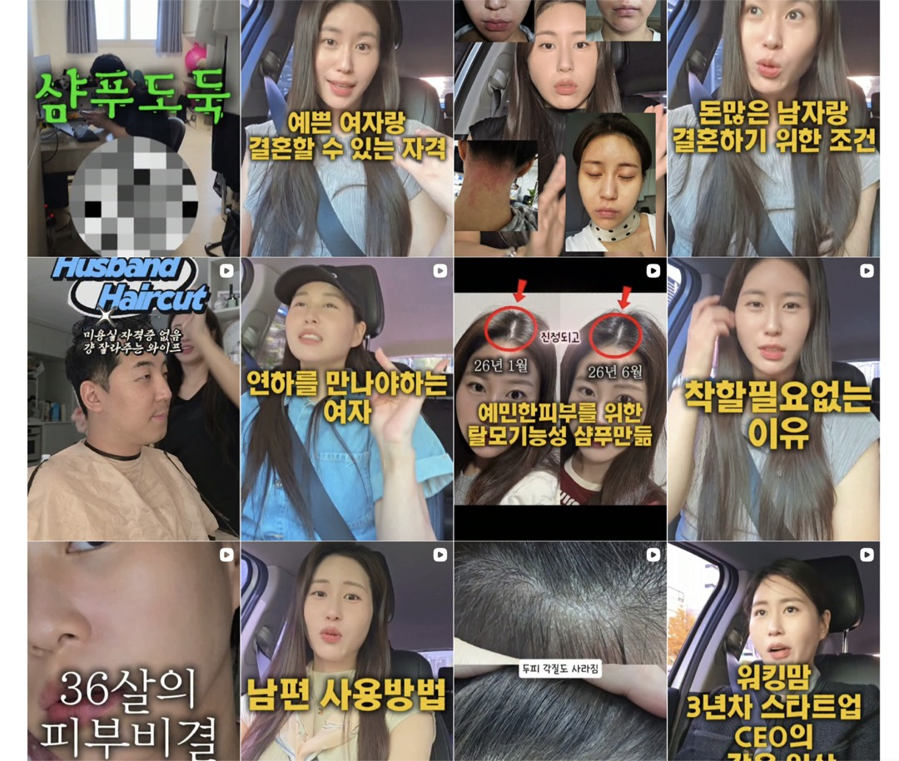
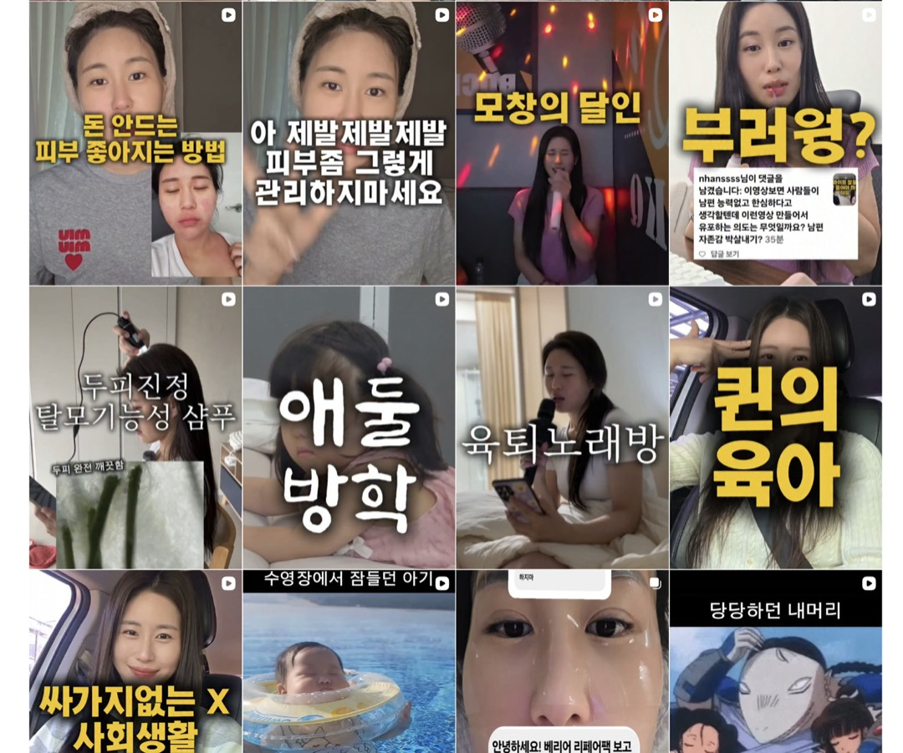
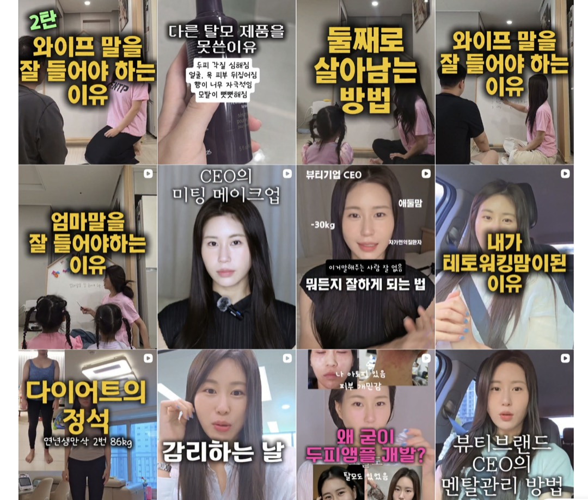
조니의 그리드도 신호가 적지 않습니다. 12칸 중 절반 가까이에 피부·두피·CEO·제품이 있습니다. 그런데 두 화면이 남기는 인식은 다릅니다. 차이는 신호의 양이 아니라 신호의 문법에 있습니다.
이때 신호에는 3가지 문법이 있습니다. 첫째, 지위가 아니라 문제로 말합니다. '뷰티 브랜드 CEO'는 무엇의 대표인지가 빠진 익명 라벨이고, 시청자의 상태를 부르는 문장이 신호입니다 — 7-4의 자격 원칙을 훅과 배지에도 적용하는 것입니다. 둘째, 익명이 아니라 고유명으로 말합니다. AD솔루션이라는 이름이 훅·배지·시리즈 제목에 반복돼야, 사람을 기억한 시청자의 손에 연결할 이름이 함께 남습니다. 셋째, 내 결과가 아니라 시청자의 기준으로 닫습니다. 내 두피가 좋아진 비포애프터는 근거일 뿐이고, 끝에 '당신이 확인할 것 하나'가 남아야 신호가 쓸모로 쌓입니다.
현재처럼 답이 여러 릴스와 스토리, 브랜드 계정, 상세페이지에 흩어져 있으면 고객이 직접 브랜드를 조립해야 합니다. 릴스는 계속 흐르고 신규 방문자는 과거 게시물을 충분히 보지 않습니다. 반복 질문에 대한 답이 고정된 형태로 남아야 합니다.
그래서 캐러셀은 릴스보다 덜 중요한 보조 포맷이 아닙니다. 구매를 막는 반대 논거를 하나씩 해소하는 계정의 정적 랜딩페이지입니다. 도달을 크게 만드는 것이 아니라 들어온 사람이 떠나지 않고 자기 상태를 확인하게 합니다.
9-3. 캐러셀은 장면·구분·이유·행동 순서로 쓴다
캐러셀은 도달을 키우는 포맷이 아니라, 들어온 사람이 자기 상태를 확인하게 하는 정적 랜딩페이지입니다.
첫 장은 정보 제목이 아니라 고객이 문제를 겪는 장면입니다. “민감 피부 관리법”보다 “세수하고 나면 뭘 발라도 따가운 날”이 고객을 정확히 부릅니다.
다음에는 무엇과 무엇을 구분해야 하는지 보여줍니다. 제품을 더 시도할 때와 일단 중단할 때, 집에서 관찰할 때와 병원에 갈 때, 기능성 제품을 쉬어야 할 때와 다시 시작할 때를 가릅니다.
그다음 이유를 설명합니다. 조니의 경험, 제품 정보, 검증 가능한 자료, 실제 고객 질문 중 필요한 근거를 사용합니다. 근거가 없는 단정이나 고객 후기를 일반 효능으로 확장하지 않습니다.
마지막에는 행동 하나를 남깁니다. 저장, 한 부위 테스트, 현재 루틴 점검, 병원 상담, 제품 비교, 사용 중단 중 하나입니다. 모든 캐러셀이 구매로 끝날 필요는 없습니다.
9-4. 반드시 남겨야 할 8개의 답변서
- 무엇을 발라도 따가울 때 먼저 멈출 것을 설명합니다. 제품을 새로 더하기 전에 현재 사용하는 기능성, 각질 관리, 세정과 마찰을 점검하고 한 부위에서 확인하는 순서를 줍니다.
- 붉고 뜨거운 날의 화장품과 진료 판단선을 설명합니다. 화장품이 할 수 있는 진정·보습의 범위와 치료가 먼저일 수 있는 신호를 분리합니다.
- 여드름성 피부에 AD솔루션을 권하지 않는 이유를 설명합니다. ‘민감성’이라는 공통 단어로 묶지 않고 보습력이 높은 제형과 유분 조절이 필요한 피부의 차이를 제품 특성에 연결합니다.
- 아토피가 아니어도 사용할 수 있는 상태를 설명합니다. 질병명을 넓게 적용하는 대신 건조함, 따가움, 기능성 휴식기, 일시적 예민기처럼 현재 상태로 구분합니다.
- 제품별 사용 순서, 양, 중단 신호를 설명합니다. 제품을 많이 쓰는 것이 아니라 실패를 줄이는 사용을 돕습니다.
- 아이와 함께 쓰기 전 확인할 것을 설명합니다. 연령, 현재 상태, 패치 테스트, 진료가 먼저인 경우를 구분합니다.
- 기능성 제품을 쉬는 기간의 최소 루틴을 설명합니다. 무엇을 더할지보다 무엇을 빼고 어떤 순서로 돌아올지를 보여줍니다.
- 반복 DM 질문에 대한 대표 답변을 남깁니다. 실제 질문을 익명화하고 조니의 짧은 답, 그 이유, 고객이 할 행동으로 구성합니다.
9-5. 증거는 만드는 것이 아니라 이미 일어나는 일을 포착한다
증거가 없는 것은 아닙니다. 고객 상담, DM, CS, 무물, 본인 피부의 경과, 제품을 쓰는 순간, 제조와 개발에서 내린 선택이 매일 일어납니다. 이 장면을 기록하고 재사용 가능한 형식으로 바꾸면 됩니다.
무물은 계속 새로 열 필요가 없습니다. 반복 질문을 캡처해 캐러셀로 남기고, 한 질문을 개인 계정의 대사 재연 릴스와 브랜드 계정의 답변서로 각각 변환할 수 있습니다. 고객의 사용 실패와 조정 과정도 한 번의 극적인 전후가 아니라 정착 기록으로 남길 수 있습니다.
콘텐츠 제작을 별도의 연기로만 보면 부담이 커집니다. 이미 일어나는 판단과 상호작용을 포착하면 대표님의 실제 업무가 브랜드의 증거 자산으로 바뀝니다.
9-6. 제품 원고는 사실표와 함께 잠근다
선택 콘텐츠의 구조는 지금 설계할 수 있지만, 제품별 문장은 사실 확인 없이 완성할 수 없습니다. 제품명, 제형, 핵심 사용 상황, 비적합 상태, 중단 신호, 사용 순서와 권장량, 기능성 여부, 보유한 시험과 인증, 표현 가능한 범위를 제품 사실표로 확인해야 합니다.
이 확인 없이 “아이도 사용할 수 있다”, “이 상태에 적합하다”, “몇 분 사용한다”, “어떤 효과가 있다”는 문장을 만들지 않습니다. 이 문서의 예시 원고는 검토용 초안입니다. 제품 사실 확인과 표현 검수(부록 B)를 거친 뒤 발행 원고로 확정합니다.
강함은 어떻게 신뢰가 되는가.
강한 화법은 고객을 누르는 힘이 아니라,
잘못된 선택을 막는 보호여야 합니다.
10-1. 신뢰는 확신·역량·선의가 함께 쌓일 때 생긴다
반복되는 기준, 문제를 구분하는 능력, 판매보다 상태를 먼저 보는 행동이 제품 신뢰를 받칩니다.
사람이 조니를 좋아한다고 제품을 믿는 것은 아닙니다. 조니가 재미있고 솔직하다고 느끼는 호감과, 피부 문제를 판단할 능력이 있다고 느끼는 신뢰는 다릅니다.
고객은 먼저 이 사람이 말과 행동을 쉽게 바꾸지 않을지 봅니다. 반복해서 같은 선택 기준을 말하고, 할인이나 판매 상황에 따라 입장이 달라지지 않을 때 확신이 생깁니다.
다음으로 이 문제를 구분할 능력이 있는지 봅니다. 당사자 경험, 환자단체 활동, 치료와 화장품의 경계, 제품 개발과 실제 사용 판단이 역량을 증명합니다.
마지막으로 자기 이익보다 고객의 상태를 먼저 보는지 봅니다. 맞지 않는 고객에게 사지 말라고 하고, 치료가 먼저일 때 병원을 권하며, 제품의 단점과 한계를 먼저 공개하는 행동이 선의를 증명합니다.
3축 중 하나만으로는 부족합니다. 당사자 경험만 있으면 공감은 생기지만 제품 역량을 보장하지 않습니다. 지식만 있으면 능력은 보이지만 판매자의 선의를 알기 어렵습니다. “사지 마세요”만 반복하면 선의처럼 보이지만 실제 기준이 없으면 역판매 기술로 느껴질 수 있습니다.
이 3축이 콘텐츠 원칙이 되는 이유는 조니와 AD솔루션이 양방향으로 묶여 있기 때문입니다. 대표님은 외부 광고 모델이 아니라 제품을 만든 당사자이자 경영자입니다. 그래서 콘텐츠 속 조니의 말과 행동은 추천이 아니라, 브랜드가 어떤 기준으로 운영되는지 보여주는 내부 증거로 읽힙니다.
"광고를 보고 '어, 이거 대표님이세요? 하나 사볼까?' 하는 DM이 와요. 광고가 온라인 명함처럼 쓰이고 있는 거죠."
이 연결은 대칭적이지 않습니다. 고객은 대표의 좋은 이미지를 제품을 살 여러 이유 중 하나로 쓰지만, 대표에 대한 부정적 판단은 브랜드를 피할 이유로 더 빠르게 씁니다. AD솔루션의 고객은 이미 여러 제품에 실패해 구매 위험을 크게 느끼는 사람이라, 제품을 구매 전에 완전히 판별하기 어려울수록 대표의 태도와 평판을 대리 신호로 사용합니다. 3-5에서 논쟁의 방향을 따로 세자고 한 이유가 여기에 있습니다.
10-2. 강한 화법은 지배가 아니라 보호로 번역돼야 한다
조니의 강한 화법은 시선을 모으고 통념을 깨는 힘이 있습니다. 그러나 중증 피부 고객은 이미 수많은 판매자와 정보 앞에서 실패한 사람입니다. 더 강한 사람이 정답을 명령하는 장면은 또 하나의 압도적인 신호로 읽힐 수 있습니다.
같은 강함도 방향에 따라 다르게 작동합니다. “내 말을 들어”에 머물면 조니의 지배력이 남고, “이 선택으로 더 다치지 않게 내가 먼저 가를게”로 작동하면 고객을 보호하는 힘이 됩니다.
육아와 관계 콘텐츠에서 강한 인물은 결정을 대신 내려주는 매력적인 사람으로 보일 수 있습니다. 그러나 반복해서 실패한 피부 고객은 자신보다 강한 사람을 따르기보다, 같은 문제를 겪어 자기 상황을 알아보는 사람을 먼저 찾습니다. 전자는 힘과 확신을 보여주는 신호이고, 후자는 동일한 경험에 속해 있다는 신호입니다.
조니에게 힘은 이미 충분합니다. 추가로 필요한 것은 더 부드러운 말투가 아니라 그 힘이 누구의 편인지 확인할 수 있는 장면입니다. 따가워도 화장품에 기대고 싶은 마음을 먼저 이해하고, 왜 지금 멈춰야 하는지 설명하며, 고객이 안전하게 이동할 다음 행동을 남겨야 합니다.
"이런 강한 컨셉. 그래서 노랗고 강한 볼드한 폰트를 처음부터 시작했을 때부터 유지하고 있었던 거예요."
따라서 고객 편에 서는 순간을 의도적으로 복원해야 합니다. 감성적인 말투나 부드러운 서체를 쓰라는 뜻이 아닙니다. 센 결론 뒤에 고객의 상황을 아는 장면, 조니가 왜 화가 났는지 설명하는 원인, 고객이 안전하게 이동할 다음 행동을 붙이는 것입니다.
10-3. 취약함은 아문 흉터만 사용한다
취약함은 조니를 약하게 만드는 장치가 아닙니다. 현재의 판단이 어디에서 왔는지 보여주는 근거입니다. 아토피 투병, 과거 창업의 어려움, 혼자 육아하며 사업을 시작한 경험, 환자단체를 지키며 겪은 일은 시간이 지나 의미가 정리된 흉터입니다. 고객에게 판단 기준을 줄 수 있습니다.
반면 진행 중인 식약처 문제, 현재의 악플러와 분쟁, 감정이 정리되지 않은 공격 사건은 열린 상처입니다. 콘텐츠를 통해 해결하려 하면 사실관계와 법적 위험, 감정적 반격이 섞입니다. 시청자는 고객을 위한 정보보다 조니 개인의 갈등을 먼저 보게 됩니다.
발행 기준은 단순합니다. 이 경험을 말한 뒤 고객에게 사용할 판단이 남는가, 아니면 조니의 감정을 해소하는가를 봅니다.
10-4. 할인은 가격만 낮추는 것이 아니라 고객을 학습시킨다
할인을 반복하면 고객은 정상 가격보다 할인 시점을 기다리는 법을 배웁니다. 타임세일이 계속 연장되면 마감은 더 이상 결정을 돕는 정보가 아니라 정상 가격을 의심하게 하는 신호가 됩니다. 특히 여러 제품에 실패한 고객에게 지나치게 큰 할인은 자신감보다 불안을 만들 수도 있습니다.
그렇다고 검증된 할인 광고를 즉시 끄는 것도 현실적이지 않습니다. 대표님은 페이드 광고에서 할인형 소재의 전환을 실제로 확인했습니다. 급격하게 중단하면 현재 매출 엔진까지 흔들릴 수 있습니다.
따라서 오가닉과 페이드를 분리합니다. 오가닉에서는 할인율을 헤드라인으로 사용하지 않고 제품의 선택 이유, 비적합 조건, 실제 사용과 증거를 축적합니다. 페이드에서는 현재 할인 엔진을 유지하되 증거형·보증형 소재를 함께 실험합니다. 이 소재가 이기면 데이터에 따라 이동합니다.
목표는 할인을 없애는 것이 아니라 오가닉에서까지 할인을 앞세우지 않는 것입니다. 광고가 멈춰도, 가격 혜택이 아닌 살 이유가 고객에게 남아 있어야 합니다.
10-5. 브랜드의 핵심 서사는 한 번 말하고 끝나지 않는다
콘텐츠는 흐르고 신규 방문자는 과거 게시물을 모두 보지 않습니다. 대표님은 자신이 왜 제품을 만들었는지 이미 올렸다고 기억하지만, 오늘 들어온 고객은 그 게시물까지 내려가지 않습니다.
같은 브랜드 명제를 반복하는 것은 중복이 아닙니다. 현재의 다른 사건과 고객 질문을 통해 같은 의미를 새로 증명하는 일입니다. 36년 당사자성도 매번 같은 자기소개로 반복하지 않고, 따가움, 치료 우선선, 제품 배제, 환자단체, 개발 결정처럼 다른 에피소드에서 필요한 만큼 꺼냅니다.
같은 파일을 그대로 재업로드하는 것과 같은 이야기를 새로 말하는 것은 다릅니다. 전자는 플랫폼에서도 반복 콘텐츠로 보일 수 있고 시청자에게 새 정보가 없습니다. 후자는 브랜드가 어떤 상황에서도 같은 기준으로 판단한다는 확신을 만듭니다.
운영 원칙은 쪼개기입니다. 3-2에서 본 것처럼 현재 원점 서사는 한 편에 과밀하게 들어 있습니다. 한 편에 모든 역사를 넣지 않고 당사자로 살아온 장면, 환자 대변 활동, 고객을 병원으로 돌려보낸 경험, 개발 과정, 제품을 포기하거나 수정한 이유를 각각 독립된 콘텐츠로 만들고, 같은 이야기를 다른 장면과 다른 질문으로 반복합니다.
쪼갠 시리즈에는 브랜드 고유명을 박습니다. '운영 썰'이 아니라 'AD솔루션에서 생긴 일'처럼, 시리즈 제목 자체가 브랜드 이름의 반복 노출이 되게 합니다.
반복을 멈출지 판단하는 기준 시점도 하나 정합니다. 대표님이 질렸다고 느끼는 시점과 처음 보는 고객이 이해하기 시작하는 시점은 다릅니다. 시장이 반응하지 않는 것인지, 만드는 사람이 먼저 지루해진 것인지 구분하고, 원점 서사가 신규 방문자에게 실제로 노출되고 있는지를 먼저 봅니다. 이 구조가 실제 브랜드에서 작동한 사례는 12부의 @yezi.beauty(원점 서사 고정)와 Dr. Idriss(반복 시리즈)에서 확인합니다.
10-6. 표현 검수는 약해지는 일이 아니라 더 정확해지는 일이다
화장품 표현 규제는 조니의 화법을 꺾는 제약이 아닙니다. 효능을 단정하는 문장은 대부분 판매자의 언어고, 상태를 구분하고 경험을 말하는 문장은 대부분 조니가 원래 쓰는 언어입니다. 자격에서 출발한 문장은 규제 위험이 낮은 층에 있는 경우가 많고, 그 문장이 대체로 더 세게 먹힙니다.
구체적인 검수 기준 — 규제의 3층 지도, 표현 치환 15쌍, 후기 위험을 낮추는 5가지 형식 — 은 발행 전 점검 자료로 부록 B에 두었습니다. 발행 전에는 사전을 검색하기 전에 13-6의 다섯 질문부터 답합니다.부록 B — 표현 검수 기준 · 1차 검수 기준이며, 최종 사용 가능 여부는 발행 전 별도 검토가 필요합니다.
10-7. 타사 저격·정치·종교·매출 공개는 브랜드 역할 밖에 둔다
대표님은 브랜드를 운영하기 때문에 타사 제품에 대한 사적 평가를 콘텐츠에서 공격적으로 사용하지 않는다는 원칙을 이미 갖고 있습니다. 판매하지 않는 클렌징이나 생활 제품을 추천할 수는 있지만, 경쟁 브랜드를 깎아 자신의 제품을 높이지 않습니다.
"저희 브랜드엔 클렌징이 없어서, 다른 브랜드 클렌징을 추천하기도 해요."
정치와 종교 발언도 의도적으로 하지 않습니다. 콘텐츠의 분노는 워킹맘, 환자, 치료와 화장품처럼 조니의 페르소나와 브랜드가 실제로 책임질 수 있는 영역에 둡니다.
"매출을 공개하는 콘텐츠는 저한테는 독이라고 생각했어요. 잘 되는 걸 공유하는 건 조금 위험한 것 같더라고요."
매출과 성공 공개는 사업가 권위를 만들 수 있지만 시기, 신고, 안전 위험을 키울 수 있고 제품 신뢰로 직접 이어지지 않습니다. 대표님이 위험하다 판단한 만큼 브랜드 전략에서도 권하지 않습니다.
두 계정과 광고는 어떻게 한 브랜드로 작동하는가.
하나의 질문을 복사하지 않고,
각 채널의 역할에 맞게 이어갑니다.
11-1. 개인 계정은 사람이 말해야 설득되는 판단을 맡는다
개인 계정은 미디어 엔진과 전이 엔진의 중심입니다. 육아·관계·사업 콘텐츠로 도달력을 유지하고, 당사자 경험, 환자단체 활동, 판매 거절, 제품을 가르는 기준처럼 조니가 직접 말해야 설득되는 내용을 쌓습니다.
개인 계정의 프로필과 고정 게시물은 새로 들어온 사람이 조니의 네 페르소나를 빠르게 이해하도록 해야 합니다. 미디어 콘텐츠 하나마다 제품을 붙이지 않아도 계정 전체에서 조니가 누구인지 발견할 수 있어야 합니다.
11-2. 브랜드 계정은 판단을 저장하고 확인시킨다
브랜드 계정은 조니의 작은 복제 계정이 아닙니다. 제품별 선택표, 사용법, 중단 신호, 고객 질문, 검증 가능한 자료, 구매 후 답변서를 저장하는 곳입니다.
광고나 개인 계정에서 들어온 사람이 목적을 갖고 방문하기 때문에, 릴스 피드 속에서 답을 다시 찾게 하지 않습니다. 캐러셀과 고정 게시물로 계정 자체를 랜딩페이지처럼 구성합니다.
브랜드 계정에 이미 있는 조니의 서사 영상은 버릴 자산이 아닙니다. 개인 계정에서 변주해 다시 촬영할 대본 재고입니다. 브랜드 계정에서는 그 서사가 제품 기준과 고객 답변으로 바뀌어 남아야 합니다.
11-3. 광고는 확인된 문제 장면을 증폭한다
광고는 오가닉 콘텐츠의 모든 역할을 대신하지 않습니다. 문제 장면, 조니의 브랜드 자격, 제품 선택 이유를 압축하고, 이미 반응이 확인된 장면을 더 넓게 배포합니다.
광고를 보고 들어온 사람이 개인 계정에서 같은 서사의 주인을 만나고, 브랜드 계정에서 제품 판단을 확인하며, 자사몰에서 구매할 수 있어야 합니다. 현재처럼 광고, 개인, 브랜드가 서로 다른 조니를 보여주면 고객이 수동으로 연결해야 합니다.
11-4. 하나의 질문을 세 채널에서 다르게 답한다
같은 질문을 복사하지 않고 각 채널의 역할에 맞게 번역해 최종 선택으로 모읍니다.
“아토피가 아니어도 써도 되나요?”라는 질문을 예로 들 수 있습니다.
개인 계정에서는 조니가 실제 질문을 대사로 재연하고, 질병명이 아니라 건조함과 예민한 시기라는 상태로 구분하며, 여드름성 피부에는 권하지 않는 이유를 말합니다.
브랜드 계정에서는 해당되는 상태, 해당하지 않는 상태, 제품별 제형, 사용 순서, 중단 신호를 저장 가능한 캐러셀로 정리합니다.
광고에서는 “아토피가 아니어도 됩니다”처럼 대상을 무제한으로 넓히지 않고, 기능성 제품을 쉬어야 하거나 건조하고 따가운 시기라는 문제 장면과 제품 선택 이유를 압축합니다.
같은 파일을 세 곳에 복사하는 것이 아니라 같은 판단 기준을 채널의 역할에 맞게 번역합니다.
11-5. 대표님이 물러나는 것은 출연을 줄이는 일이 아니라 판단을 이전하는 일이다
대표님이 브랜드에서 물러나는 시점은 날짜나 팔로워 수로 정하지 않습니다. 고객이 조니 없이도 제품의 적합과 비적합, 사용과 중단, 진료 우선선을 확인할 수 있을 때 가능합니다.
브랜드 계정의 답변서, 제품 선택표, 고객 정착 기록, CS 원칙, 개발 이유, 반복 가능한 보이스가 조니의 판단을 이어받아야 합니다. 조니가 없는 콘텐츠도 같은 선의와 기준을 보여줘야 합니다.
이 구조는 다른 브랜드에서 실제로 작동했는가.
개인에게 형성된 인식이
저절로 브랜드가 된 경우는 없습니다.
이 부는 전략의 출발점이 아니라 검증입니다. 6~11부의 처방은 조니의 244편과 대표님과의 미팅에서 도출했습니다. 여기서는 같은 구조 — 대표의 당사자 경험이 브랜드 자격으로 고정되고, 직설이 제품 기준으로 이동하며, 팔기 전에 경계를 먼저 밝히는 구조 — 가 다른 브랜드에서 실제로 작동한 사례를 확인합니다.
계정 전체를 모범답안으로 제시하지 않습니다. 사례마다 가져올 구조 하나와 가져오지 않을 것을 함께 표시합니다. 벤치마킹은 모방이 아니라 구조의 선택이기 때문입니다.
12-1. Dieux Skin(@dieuxskin)
직설이 제품 사실로 고정되는 구조
창업자의 반박을 가격·클레임·원료의 투명성으로 고정하는 스킨케어 브랜드 계정
www.instagram.com/dieuxskinDieux 공동창업자. 업계 과장과 성분 신화를 반박하는 개인 계정
www.instagram.com/charlotteparler이 사례가 해결한 문제 — 업계의 과장과 성분 신화를 반박하는 강한 개인 캐릭터가, 막연한 호감으로 소비되지 않고 브랜드 신뢰로 남게 만드는 문제입니다. Dieux는 창업자의 반박을 가격·클레임·원료·성분표에 도달하는 과정의 투명성으로 브랜드에 고정합니다.
조니와 같은 지점 — 조니도 "월 삼천이 찍힌다고 그게 다 수익이냐"처럼 겉 숫자와 실제 비용을 가르는 반박이 가장 강한 무기입니다(3-1). 지금은 그 반박이 사업가 조니에게만 쌓입니다.
가져올 구조 — 반박 뒤에 자기 제품의 사실이 따라오는 순서입니다. "전성분이 많다고 좋은 제품인가"라고 반문했다면, AD솔루션은 실제로 무엇을 어떤 이유로 넣고 뺐는지가 다음 콘텐츠에서 증명돼야 합니다. 개인 계정의 발언과 브랜드의 제품 사실표(9-6)가 서로를 증명하는 양방향 연결입니다.
가져오지 않을 것 — 해외 규제 기준의 표현을 국내에 그대로 쓰는 것, 업계 논쟁 자체를 조회 소재로 소비하는 것, 반박만 가져오고 제품 사실을 생략하는 것.
첫 실험 — 판단 구조 전이 콘텐츠(8-2) 한 편을 "업계 통념 반박 → AD솔루션의 실제 배합 이유" 순서로 발행하고, 13부 기준으로 저장·질문 반응을 확인합니다.
12-2. Tower 28 Beauty(@tower28beauty)
당사자 경험이 카테고리 자격으로 고정되는 구조
창업자의 습진 경험을 브랜드 존재 이유로 고정한 계정
www.instagram.com/tower28beauty이 사례가 해결한 문제 — 창업자의 피부 질환 경험이 개인의 극복담에서 끝나지 않고 브랜드의 존재 이유가 되게 만드는 문제입니다. Tower 28은 창업자의 습진 경험을 피드 최상단과 브랜드 소개에서 반복해, 처음 온 사람이 원점을 놓치지 않게 합니다.
조니와 같은 지점 — 조니의 36년 중증 아토피 경험은 가장 희소한 자산인데, 대중이 가장 자주 기억하는 조니는 엄마·센 언니·사업가입니다(3-3). 원점 서사가 한 편에 과밀하게 몰려 있고(3-2), 신규 방문자에게 반복 노출되지 않습니다.
가져올 구조 — 원점 서사의 고정 진입 구조와, 질환 경험을 극복 영웅담이 아니라 제품의 범위·안전·배제 기준으로 번역하는 방식입니다. 10-5의 쪼개기·반복 처방이 실제 브랜드에서 작동하는 모습입니다.
가져오지 않을 것 — 아토피·습진·민감 피부를 하나의 의학적 상태처럼 혼용하는 것, 해외 인증 표현을 검증 없이 쓰는 것, 밝고 친근한 색조 브랜드의 외형.
첫 실험 — "왜 아토피 환자가 화장품을 만들었는가"를 장면 하나로 쪼갠 원점 콘텐츠 한 편을 발행하고 프로필 고정 진입에 배치한 뒤, 신규 방문자의 프로필 행동을 확인합니다.
12-3. Dr. Idriss(@dridriss)
구분하는 사람의 권위가 브랜드로 이동하는 구조
오정보를 바로잡는 반복 시리즈로 구분하는 사람의 권위를 만든 개인 계정
www.instagram.com/shereeneidriss그 판단 기준을 제품군으로 옮긴 브랜드 계정
www.instagram.com/dridriss이 사례가 해결한 문제 — "필요한 것과 필요하지 않은 것을 솔직하게 구분하는 사람"이라는 개인 인식을 제품 브랜드의 존재 이유로 옮기는 문제입니다. 오정보를 바로잡는 반복 시리즈(PillowtalkDerm)가 인물의 인지 자산이 됐고, 그 철학이 제품군으로 이어졌습니다.
조니와 같은 지점 — 조니의 강함도 제품을 세게 권하는 데 쓰는 것이 아니라, 고객이 또다시 잘못된 제품과 정보에 비용을 쓰지 않도록 막는 역할로 번역돼야 합니다(2-3·10-2). 구조가 정확히 같습니다.
가져올 구조 — 오정보 반박 → 상태 구분 → 필요한 것과 불필요한 것 → 제품의 제한된 역할로 이어지는 순서, 그리고 반복 시리즈에 이름을 붙여 인물과 브랜드의 공동 자산으로 만드는 방식입니다. 조니가 반복해서 잘라내는 "잘못된 순서"에 시리즈 이름을 붙일 수 있는지가 적용 질문입니다.
가져오지 않을 것 — 피부과 전문의의 진단 권위와 표현을 당사자 경험으로 대체하는 것, 의학적 판단과 화장품 선택의 경계를 흐리는 것, 가운·클리닉 같은 권위의 외형.
첫 실험 — "치료가 먼저인 상태 / 기능성을 쉬어야 하는 상태 / 화장품을 시도할 수 있는 상태"를 가르는 시리즈 1화를 제품 언급 없이 발행하고, 프로필 방문과 저장을 확인합니다.
12-4. 톤즈의원(@dr_ohmi)
국내에서 작동한 같은 구조
팔로워 26.9만 (2026-08 기준) · 사업·운영 서사를 회사 세계 안에서 발화하는 개인 계정
www.instagram.com/dr_ohmi이 사례가 해결한 문제 — 개인의 인간적인 이야기와 사업 이야기가 브랜드와 분리된 세계에서 소비되는 문제입니다. 톤즈의원을 운영하는 의사는 같은 썰 문법을 쓰면서도 소재를 전부 자기 회사의 운영 세계 안에 두어, 큰 도달이 곧 브랜드 세계관의 노출이 되게 만들었습니다.
조니와 같은 지점 — 한국 시장, 강한 여성 운영자 캐릭터, 개인 계정이 도달을 만들고 브랜드가 받는 구조까지 조건이 거의 같습니다. 조회 상위 콘텐츠가 전부 사업·돈·운영 서사인 비대칭도 조니와 같습니다(3-3). 다른 것은 그 서사의 발화 위치 하나입니다. 조니의 육아·관계 콘텐츠는 브랜드와 분리된 세계에서 발화되고(3-4), 이쪽은 같은 이야기가 회사 안에서 발화됩니다.
가져올 구조 — 첫째, 사업 콘텐츠의 소재를 사업 일반론에서 AD솔루션 운영담으로 옮기는 것입니다. 개발에서 포기한 결정, 공장과의 실랑이, CS에서 생긴 일처럼 같은 썰 문법을 그대로 쓰되 무대만 브랜드 안으로 들입니다. 둘째, 계정 입구의 고정 게시물을 판매가 아니라 보호 선언으로 두는 것입니다 — 이쪽 계정의 입구는 불법 시술 경고입니다. 셋째, 배지와 시리즈 넘버링으로 원점 서사를 쪼개 반복하는 운반 형식입니다(10-5). 넷째, 실패를 콘텐츠로 만드는 것입니다. 손해를 본 결정과 자기 실수를 그대로 공개하는 편이 신뢰 자산이 됩니다(8-2).
가져오지 않을 것 — 진행 중 분쟁의 해명 콘텐츠. 이쪽은 검증 가능한 사실 반박이고 20여 개 지점의 조직이 뒤를 받치지만, 조니에게는 아문 흉터만 사용한다는 가드레일과 정면으로 충돌합니다(10-3). 그리고 타인 외모 평가형 콘텐츠, 의사의 지위에서 나오는 발화 형식을 당사자 발화로 흉내 내는 것.
첫 실험 — "AD솔루션에서 생긴 일" 시리즈 1화를 제품 개발에서 포기하거나 수정한 결정 하나로 발행하고, 도달 생존(13-2)과 댓글·DM이 제품 기준과 개발 이유로 옮겨가는지(13-3)를 확인합니다. 기존 시도와의 차이는 사업 이야기 자체가 아니라, 자기 브랜드의 운영을 소재로 한 시리즈라는 점입니다.
12-5. 포맷 보강
판단 과정 공개와 원점 고정
완성작 대신 판단 과정을 공개하는 포맷의 원형 계정
www.instagram.com/thechrisdo피부 원점 서사를 피드 최상단에 고정하는 진입 구조
www.instagram.com/yezi.beautyChris Do × The Futur — 완성작을 자랑하는 대신 실제 사례를 앞에 두고 무엇이 왜 맞고 틀리는지 판단 과정을 공개하는 포맷입니다. 조니에게는 실제 DM·CS 질문 하나를 두고 어떤 상태부터 확인하는지 보여주는 콘텐츠(9-4의 답변서를 콘텐츠화)로 적용됩니다. 제품을 추천하지 않는 결론도 콘텐츠가 됩니다. 타사 저격으로 바꾸지 않고(10-7), 고객 사진·상담 내용은 동의 없이 쓰지 않습니다.
@yezi.beauty — 피부 원점 서사를 피드 최상단에 고정하는 진입 구조입니다. 조니에게는 "왜 아토피 환자가 화장품을 만들었는가 / 치료와 화장품을 어디에서 가르는가 / AD솔루션은 누구에게 맞지 않는가" 3개의 고정 진입 콘텐츠로 적용됩니다. 피부 변화 이미지가 효능 보장처럼 읽히지 않도록 개인 경험과 제품 일반화를 구분합니다(부록 B).
이 밖에 여러 일상 소재를 하나의 선택 기준으로 묶는 @shellness.kr, 긴 서사를 대화 구도로 푸는 @solhee.choi, 판매 전에 신뢰 자산을 순환시키는 @jessijeanhome은 개별 실험을 설계할 때 참고 사례로 사용합니다.
12-6. 6개 사례가 공통으로 증명하는 것
6개 사례의 공통점은 하나입니다. 개인에게 형성된 인식을 브랜드 자산으로 남긴 사례에는 모두 반복 구조가 있었습니다 — 원점 서사의 고정과 쪼개기, 반박 뒤의 제품 사실, 구분 시리즈의 이름. 이 구조가 인식을 브랜드로 옮겼습니다. 그리고 @dr_ohmi는 이 구조가 해외 사례가 아니라 한국 시장과 거의 같은 조건에서도 작동한다는 국내 실증입니다. 조니에게 필요한 것도 새로운 캐릭터가 아니라 이 반복 구조이며, 그 실행 단위가 13부의 실험 카드입니다.
대표님은 무엇으로 채택과 폐기를 판독하는가.
아이디어를 의견으로 남기지 않고,
채택과 폐기가 가능한 실험으로 바꿉니다.
먼저 이 지표들이 무엇을 증명하지 못하는지 밝힙니다. 엔진 구분과 조회·저장 수치로는 이 콘텐츠가 브랜드 자산이 됐는지, 매출로 이어졌는지를 증명할 수 없습니다. 구매까지의 경로에는 광고와 검색, 지인의 추천이 함께 섞이고, 한 편의 콘텐츠가 몇 달 뒤의 구매에 작용하기도 합니다. 콘텐츠 마케팅은 수치만으로 해석되지 않습니다.
그래서 이 기준들은 합격선이 아니라 논의를 시작할 선입니다. 도달이 생존했는지를 숫자로 확인하고, 그 콘텐츠가 무엇을 남겼는지는 댓글과 DM에 실제로 등장한 말로 판단합니다. 채택과 폐기는 두 축을 함께 본 뒤에 정합니다.
13-1. 첫 검증 단위는 12편이다
아이디어를 의견으로 남기지 않고 채택과 폐기가 가능한 실험 단위로 바꿉니다.
첫 실험은 미디어 4편, 전이 5편, 선택·정착 3편으로 구성합니다. 이 비율은 영구 편성표가 아닙니다. 현재 가장 불확실한 전이 엔진에 더 많은 학습량을 배정한 실험안입니다.
동시에 검증하는 포맷은 3개를 넘기지 않습니다. 새로운 아이디어를 계속 여는 대신 같은 전이 장치를 최소 3번 반복해 우연과 포맷의 차이를 봅니다.
13-2. 미디어 콘텐츠는 도달과 계정 행동으로 판단한다
기준선은 고정된 절대 수치가 아니라 이 계정 자신의 최근 성적으로 정의합니다. 미디어 콘텐츠의 1차 성공선은 직전 90일 미디어 엔진 콘텐츠의 중앙 조회수이고, 강한 성공선은 같은 모집단의 상위 사분위입니다. 절대 수치는 계정이 커지면 너무 쉬워지고 계정이 가라앉으면 아무도 넘지 못하는 선이 되어, 몇 달만 지나도 판단에 쓸 수 없게 됩니다.
2026-08-05 수집 스냅샷 기준 직전 90일에 미디어 엔진은 84편이고, 중앙 조회수는 13,000회, 상위 사분위는 31,000회입니다. 따라서 현재 값으로는 13,000회 이상이 1차 성공, 31,000회 이상이 강한 성공입니다. 외워야 할 것은 이 두 숫자가 아니라 정의이며, 값은 다시 계산합니다.
지금 인용한 값은 2026-08-05에 한 번 읽은 조회수 스냅샷입니다. 태깅 시트에 수집일 열이 없어 이 값이 발행 후 7일 시점의 값이라고 증명할 수 없기 때문에, 본문에서도 “7일 13,000회”라고 확정해 쓰지 않습니다. 다음 분기부터는 발행 후 7일에 잠근 고정값(views_d7)과 수집일을 함께 저장해 기준선을 갱신합니다.
조회수와 함께 비팔로워 도달, 팔로우, 프로필 이동을 봅니다. 조회는 크지만 계정 행동이 반복적으로 남지 않는다면 계정을 키우는 미디어로서 역할을 다시 봅니다. 인사이트 원본이 확보되면 이 지표들에도 같은 방식으로 기준선을 만듭니다.
13-3. 전이 콘텐츠는 조회 생존과 의미 성공을 함께 본다
도달 생존선도 같은 방식으로 정의합니다. 전이 콘텐츠의 생존선은 직전 90일 전이 엔진 콘텐츠의 중앙 조회수입니다. 2026-08-05 수집 스냅샷 기준 직전 90일에 전이 엔진은 27편이고 중앙 조회수는 9,012회이므로, 현재 값으로는 9,012회 이상이면 도달이 생존한 것으로 봅니다. 이 값도 13-2와 같은 수집 스냅샷이며, 다음 분기부터 발행 후 7일 고정값(views_d7)으로 갱신합니다.
이 선이 미디어보다 낮은 것은 전이 콘텐츠에 느슨한 자를 대는 것이 아니라, 두 엔진이 실제로 다른 크기의 도달에서 움직이기 때문입니다. 미디어의 13,000회를 전이에 그대로 대면 잘 작동한 전이 콘텐츠까지 전부 실패로 기록됩니다. 그러나 피부 문제, 조니의 당사자 자격, 제품 판단에 관한 댓글·DM·프로필 행동이 발생해야 의미 성공입니다.
조회가 높아도 댓글이 원래 육아·관계 소재에만 머물거나 피부 구간 직전 이탈이 반복되면 전이에는 실패한 것입니다. 같은 장치를 세 번 실행해 두 번 이상 도달 생존과 의미 성공을 함께 충족하면 채택합니다.
13-4. 선택·정착 콘텐츠는 조회수로 폐기하지 않는다
선택 콘텐츠에는 절대 조회수 컷을 두지 않습니다. 같은 역할의 최근 5편 중앙값과 비교해 저장, 프로필에서 웹 이동, 제품 질문, 반복 질문 감소, 구매 후 문의의 질을 봅니다.
참고선만 앞의 두 절과 같은 형식으로 둡니다 — 직전 90일 선택·정착 엔진 콘텐츠의 중앙 조회수이고, 2026-08-05 수집 스냅샷 기준 직전 90일로 24편·6,042회입니다. 이 값 역시 다음 분기부터 발행 후 7일 고정값(views_d7)으로 갱신합니다. 이 값은 폐기선이 아니라 이 엔진이 원래 어느 크기에서 움직이는지를 알려주는 눈금입니다. 6,042회에 못 미쳤다는 이유만으로 폐기하지 않습니다.
현재는 세부 인사이트와 구매 연결 데이터가 없기 때문에 존재하지 않는 절대 성공률을 만들지 않습니다. 12편 운영 뒤 각 역할의 실제 기준선을 잠급니다.
13-5. 반박은 실패가 아니라 카드 수정 절차다
대표님은 대부분의 단순한 제안을 이미 시도했을 가능성이 높고 자신의 경험과 충돌하는 주장에 즉시 반박합니다. 이 반박을 저항으로 취급하면 가이드는 사용되지 않습니다.
각 실험 카드에는 가설, 실행, 판독, 폐기, 주기와 함께 “이미 해본 것과의 차이”를 적습니다. 반박이 나오면 기존 시도와 새 카드의 차이를 확인하고, 차이가 없다면 폐기하며, 차이가 있다면 가설을 수정해 검증합니다.
13-6. 발행 전 다섯 질문
첫째, 이번 게시물의 엔진은 무엇인가. 둘째, 누구의 어떤 상태를 부르는가. 셋째, 조니가 이 말을 할 자격은 무엇인가. 넷째, 제품을 지우면 이야기의 갈등과 해결이 달라지는가. 다섯째, 무엇을 보면 성공 또는 실패라고 판단할 것인가.
한 칸이라도 답하지 못하면 촬영보다 기획을 먼저 고칩니다.
13-7. 기준선을 다시 만드는 법
13-2부터 13-4까지의 기준선은 전부 “직전 90일 해당 엔진의 중앙 조회수”라는 하나의 정의에서 나옵니다. 정의가 같으니 갱신 방법도 하나면 됩니다. 여기 적는 3단계는 대표님이 분기마다 직접 돌릴 수 있는 크기로 만든 것입니다.
1. 모은다. 최근 90일에 발행한 릴스 전량을 옮겨 적습니다. 표는 하나가 아니라 둘입니다 — 게시물 단위 지표와 계정 단위 지표는 쪼갤 수 있는 단위가 다르기 때문입니다.
첫 번째 표는 게시물 원장입니다. 한 편이 한 행이고, 필수 열은 media_id, 발행일, 훅, 내용 요약 또는 대본, 브랜드·제품의 역할, views_d7입니다. 여기에 편별로 확보되는 지표만 선택 열로 붙입니다 — 저장, 도달, 팔로우, 그리고 의미 있는 댓글·DM과 수집일.
두 번째 표는 계정·기간 지표입니다. 프로필 방문, 웹사이트 클릭, 문의량은 개별 게시물에 나눠 붙일 수 없는 계정 단위 값이므로, 기간을 한 행으로 하는 별도 표에 적습니다. 이 둘을 한 표에 섞으면 계정 값이 특정 편의 성과처럼 읽혀 기준선이 오염됩니다.
기본 경로는 인스타그램 인사이트 화면을 보고 옮겨 적는 것이고, 90일이면 대개 한 시간 안에 끝납니다.
정식 경로는 Instagram Graph API로 같은 값을 내려받는 것입니다. AD솔루션은 이 수집을 직접 할 수 있는 팀이므로 절차만 적습니다. 계정을 프로페셔널 계정(비즈니스 또는 크리에이터)으로 두고 페이스북 페이지에 연결합니다 — 인사이트는 프로페셔널 계정에만 열립니다. 메타 개발자 콘솔에서 앱을 만들고 인스타그램 인사이트 조회 권한을 신청한 뒤, 발급받은 토큰을 장기 토큰으로 교환해 갱신 주기를 정해 둡니다. 수집은 두 단계로 나눕니다. 먼저 계정의 미디어 목록을 받아 게시물마다 식별자, 발행 시각, 캡션, 퍼머링크를 확보하고, 그 식별자로 게시물별 인사이트를 조회해 도달과 저장, 조회를 가져옵니다. 프로필 방문은 게시물 지표가 아니라 계정 단위 지표라서 기간을 지정한 별도 호출로 받습니다.
지표 이름과 제공 여부는 API 버전에 따라 바뀝니다. 예를 들어 노출(impressions)은 릴스에서 제공이 중단되고 조회 지표로 대체됐습니다. 그러므로 스크립트를 쓰기 전에 현재 버전 문서의 지표 목록을 먼저 확인하고, 문서에 없는 이름은 쓰지 않습니다. 어느 경로로 받든 저장 형식은 앞의 두 표(게시물 원장 · 계정·기간 지표)로 통일합니다. 두 경로의 결과가 같은 구조여야 다음 단계도 동일하게 작동합니다.
2. AI에게 분류와 계산을 시킨다. 여기서 핵심은 하나입니다 — 분기마다 같은 판정 기준을 쓰는 것입니다. 기준이 고정돼 있지 않으면 AI는 그때그때 자기 나름의 기준으로 분류하고, 이번 분기의 “전이”와 다음 분기의 “전이”가 서로 다른 것을 가리키게 됩니다. 그러면 두 시점의 중앙값을 비교하는 일 자체가 성립하지 않습니다. 기준선은 시계열로 볼 때만 쓸모가 있으므로, 기준을 고정하는 일이 나머지 전부를 지탱합니다. 그래서 부록의 도구에는 엔진 정의와 계산 규칙이 도구 안에 전문으로 박혀 있습니다 — 매번 기준을 따로 챙겨 붙일 필요가 없고, 도구를 통째로 복사하는 것만으로 같은 잣대가 유지됩니다.
복붙용 도구는 부록 ‘발행 전 점검’ 탭의 도구 2 안에 세 개로 나눠 두었습니다 — ① 발행 전 판정, ② 성과 분류·계산, ③ 표현 1차 검수. 하나의 프롬프트를 번호로 갈아 쓰는 방식이 아니라, 지금 할 일에 해당하는 도구 하나를 통째로 복사하는 방식입니다.
기준선 갱신에 쓰는 것은 그중 ② 성과 분류·계산 하나입니다. 앞에서 만든 두 표를 각각 입력 A(게시물 원장)와 입력 B(계정·기간 지표) 칸에 나눠 넣습니다. 직전 분기의 기준선이 있으면 입력 C에 함께 적습니다 — 그래야 출력의 “이전 대비” 칸이 채워집니다. 분류가 애매한 편은 임의로 정하지 않고 보류로 표시되며, 보류로 나온 편은 사람이 직접 읽고 판정한 뒤 다시 계산에 넣습니다.복붙용 — AI 도구 ② 성과 분류·계산
출력된 3개의 중앙값이 다음 분기의 기준선입니다. 미디어의 중앙값과 상위 사분위는 13-2의 1차 성공선과 강한 성공선이 되고, 전이의 중앙값은 13-3의 도달 생존선이 되며, 선택·정착의 중앙값은 13-4의 참고 눈금이 됩니다.
3. 사람이 판단한다. 여기까지가 숫자의 몫입니다. 숫자가 말해주는 것은 도달이 생존했는지 하나뿐이고, 그 콘텐츠가 무엇을 남겼는지는 말해주지 않습니다. 채택과 폐기는 댓글과 DM에 실제로 등장한 말로 정합니다 — 자기 피부 상태를 자기 말로 설명하는 문장이 늘었는지, 제품을 고르는 이유를 묻는 질문이 생겼는지, 반대로 반응이 육아·관계 소재에만 머물렀는지입니다.
갱신 주기는 분기 1회를 권합니다. 매달 다시 계산하면 한두 편의 바이럴에 선이 통째로 흔들리고, 반년을 넘기면 그 선이 계정의 현재와 맞지 않게 됩니다. 기준선을 바꾼 분기에는 바꿨다는 사실과 시점을 실험 카드에 적어 둡니다. 그래야 이전 분기의 채택 판정과 이번 분기의 판정을 나란히 놓고 볼 수 있습니다.
13-8. 대표님에게 익숙한 내용은 전제로만 사용한다
대표님은 바이럴, 메타 광고, 소재 테스트와 성과 판독을 이미 수행하고 있습니다. 따라서 본문에서 이러한 개념을 기초부터 길게 설명하지 않습니다.
색조 콘텐츠에서 조회수와 팔로워가 발생했지만 사업적으로 의미가 없었다는 판단은 퍼스널브랜딩과 브랜드 전이를 구분하는 전제가 됩니다. 감성적인 톤이 자신과 맞지 않는다는 판단은 부드러운 더마 브랜드 문법을 제외하는 근거가 되며, 제품 소재만 반복하기 어렵다는 조건은 새로운 촬영을 계속 요구하지 않고 상담·DM·CS를 포착하는 운영 구조로 이어집니다.
대표님이 이미 알고 있는 사실을 다시 설명하는 것이 아니라, 그 사실들이 함께 보여주는 구조와 다음 판단을 제시해야 합니다.실물 — 한 장짜리 판독 루틴 · 주간 판독 시트 · 로우 데이터 — 244편 다축 태깅 시트 (CSV)
조니에게서 시작하지만,
조니에게만 머물지 않는 브랜드.
조니라는 페르소나의 바이럴 재능도, AD솔루션의 제품과 고객 경험도 이미 강한 자산입니다. 다만 지금은 서로 다른 계정과 콘텐츠 안에서 각각 다른 의미로 작동합니다. 이 문서가 한 일은 새 자산을 만드는 것이 아니라, 둘을 같은 인과 안에 놓는 방법을 정한 것입니다.
사람은 조니의 육아, 관계, 사업 이야기를 보러 옵니다. 그 관심이 당사자, 환자 대변자, 제품 판별자라는 조니의 다음 층으로 이동할 때 조니에 대한 호감은 브랜드의 자격이 됩니다. 고객이 자기 피부를 구분하고 다음 선택을 할 수 있을 때 그 자격은 제품과 브랜드에 남습니다.
이 과정에서 모든 바이럴을 제품으로 바꿀 필요는 없습니다. 미디어는 사람을 데려오고, 전이는 조니의 의미를 옮기며, 선택 콘텐츠는 구매 전후의 실패를 줄입니다. 서로 다른 일을 같은 조회수로 평가하지 않습니다.
장기적으로는 조니가 매번 말하지 않아도 같은 판단이 반복돼야 합니다. 제품 선택표, 고객 답변서, 개발과 배제의 이유, 사용과 중단 기준, 고객이 정착하기까지의 기록이 조니의 판단을 이어받아야 합니다.
사람은 조니를 보러 옵니다. 그 사람이 자기 피부를 판단할 기준을 얻는 순간, AD솔루션이 남습니다.